La
révélation d'Eyrénée
Philalèthe (VI)


revu le 14 octobre 2004
Chapitre 6
L'Air
des Sages
L'étendue ou le firmament, est
appelé AIR1 dans les Saintes
Écritures. Notre Chaos2 est
aussi nommé Air, et cela n'est pas un secret notable3, car comme l'air firmamental, notre air est le
séparateur des eaux4. Notre
oeuvre est donc véritablement un système harmonique5 au monde majeur. En effet, les eaux
qui sont sous le firmament6 nous
sont visibles, à nous qui vivons sur la terre ; mais les eaux
supérieures échappent à nos regards en raison de
leur éloignement. De même, dans notre microcosme, il y a
des eaux minérales issues du centre7
qui apparaissent, mais celles qui sont enfermées à
l'intérieur nous sont invisibles, et pourtant elles existent
réellement.
II
Ce sont ces eaux dont parle l'auteur
de la Nouvelle Lumière : elles existent, mais apparaissent
seulement quand l'artiste le juge à propos8. Ainsi, de même que l'air fait une
séparation entre les eaux, de même notre Air empêche
que les eaux excentrales ne pénètrent jusqu'à
celles qui sont dans le centre. Car si elles y parvenaient et s'y
mêlaient, aussitôt elles se joindraient d'une indissoluble
union9.
III
Je dirai donc que le soufre externe10, vaporeux, comburant,
adhère tenacement à notre Chaos11, à la tyrannie duquel il n'a pas la force de
résister, si bien que, pur, il s'envole du feu sous l'apparence
d'une poudre sèche. Mais si tu sais irriguer cette terre aride
avec une eau de son propre genre, tu élargiras les pores de
cette terre, et celarron externe sera
chassé au-dehors avec les opérateurs du désordre,
l'eau sera purgée par l'addition d'un soufre véritable12 de ses ordures lépreuses
et de son humeur hydropique13
superflue; et tu auras en ta possession la fontaine du comte
Trévisan14, dont les eaux
son proprement dédiées à la vierge Diane15.
IV
Ce larron16 est un vaurien, armé d'une malignité
arsenicale17, que le jeune homme
ailé abhorre et fuit18. Et
quoique l'eau centrale soit sa fiancée, il n'ose montrer l'amour
si ardent qu'il éprouve pour elle, à cause des
embûches du larron dont les ruses sont presque
inévitables. Que Diane19
ici te soit propice, qui sait dompter les bêtes sauvages et dont
les deux colombes20 (qui ont été trouvées volant
sans ailes21 dans les bois de la
Nymphe Vénus22)
tempéreront de leurs plumes la malignité23 de l'air ; parce que le jeune homme entre
aisément par les pores, ébranle aussitôt les eaux
polaires supérieures, qui n'ont pas été
étonnées par les mauvaises odeurs24, et il suscite une nuée noire : tu y verseras
des eaux, jusqu'à ce qu'apparaisse la blancheur de la Lune25. Ainsi les ténèbres
qui étaient sur la face de l'abîme seront-elles
dissipées par l'esprit se mouvant sur les eaux26.
V
Donc, sur l'ordre de Dieu,
paraîtra
la lumière. Sépare sept fois27
cette lumière des ténèbres et cette
création
philosophique du Mercure sera achevée; le septième jour
sera
pour toi un sabbat de repos28.
Depuis
ce temps jusqu'à la fin de l'année révolue, tu
pourras
attendre la génération du fils du Soleil29
surnaturel qui viendra dans le monde vers la fin des siècles30
pour libérer ses frères de toute leur impureté.
Notes
1. On notera avant tout la
proximité phonétique de aer (air)
et aes (cuivre, bronze, laiton). Il nous
faut faire ici un effort de réflexion : il est évident
que ces propos sur l'air représentent une allégorie qui
doit nous donner une indication en rapport avec ce que Sendivogius
écrivait ailleurs dans sa Nouvelle lumière Chymique :
"(L'air)
est la matière des anciens philosophes... C'est l'eau de notre
rosée,
de laquelle est extrait le Salpêtre
des philosophes... c'est notre pierre d'aimant... [à laquelle]
j'ai
donné le nom de Chalybs ou Acier...et que ce que le vent porte
dans
son ventre, à savoir le Sel Alkali,
que les philosophes ont appelé Sal
Armoniacum, et végétal, est
caché dans le ventre de la Magnésie".
et qui n'a
pas de
rapport direct avec l'atmosphère. Air,
en latin, se dit aer
; nous risquons un rapprochement avec aes
par l'intermédiaire de area
signifiant aire, espace public.
La transition nous mène à aerarium,
trésor public placé dans le temple
de Saturne, outre les
dérivés
de la racine aes = airain, bronze
qui sont des amalgames.
[cf. section chimie
et alchimie pour des développements sur l'aes]. Le Sal Armoniacum renvoie à Ammon,
dieu égyptien, parce qu'on préparait cette substance
autrefois près de son temple en Lybie, ce qui conduit à Hammon, nom de Jupiter
chez les Lybiens. Le sel ammoniac était déjà connu
du temps de Pline et de Dioscoride. Aétius, qui vivait au Ve
siècle, parle de sels ammoniacaux, sans entrer dans aucun
détail. Synésius, évêque de
Ptolémaïs, qui vviait à la même époque,
dit, dans l'une de ses lettres, que le sel ammoniac [alV ammoniakoV] est très utile,
et qu'il se rencontre naturellement dans la nature [Epistol. 147]. Il faut faire observer que le sel ammoniac des
Anciens, et même celui dont parlent Avicenne, n'est pas toujours
le véritable sel ammoniac, mais le sel gemme. Geber [Djabir, Djafar] dit
à ce sujet :
"Le
sel ammoniac s'obtient en chauffant dans un vase de sublimation [in
alto
aludele] un mélange de deux parties d'urine humaine, d'une
partie
de sel commun, et d'une partie et demie de noir de fumée".
Notre
observation
se rapproche d'une note de bas de page (DM, I, p.350)
où
l'on nous précise que Ammon-Râ était ordinairement
représentée avec une tête de bélier et
parfois
avec des cornes spiralées. Fulcanelli rappelle que :
"... le bélier
est l'image de l'eau des sages... Ammon,
médiateur
salin"
qui
réalise
la concorde, l'unité et la perfection dans la pierre
philosophale.
Ce bélier, ces cornes spiralées nous rappellent aussi les
noms
adoptés pour qualifier le 1er signe du zodiaque : Arès, Ariès.
Fulcanelli insiste sur la distinction capitale que l'étudiant
doit
faire entre les deux termes qui ne se rapportent point au même
sujet.
Précisons donc ici qu'Ariès est le symbole du
signe
du Bélier et qu'il en porte donc les attributs
hiéroglyphiques
: le bélier, chacun le sait, porte une toison de laine. Cette
toison
a fait l'objet d'une part d'une allégorie mythique : c'est le
voyage
des Argonautes, partis à la recherche de la toyson d'or ;
d'autre
part, d'une allégorie hermétique : c'est la toyson
d'or qui se rattache au Splendor Solis ; l'ouvrage a
été
rédigé par Salomon Trismosin. Arès serait
plutôt
des parties de Mars : il s'agit d'un agent destructeur dont la
particularité
est d'être opposé, en particulier, aux divinités
solaires
[du Soufre], personnifiées par Zeus, etc. C'est ici qu'il
faut évoquer le chêne. Nous renvoyons à une autre section sur le sujet. Que
l'on sache en substance que aesculus (= chêne
rouvre) est consacré
à Jupiter.
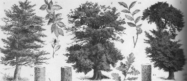
hêtre, chêne rouvre et
chêne
yeuse
Cette
histoire de
chêne a été l'objet de contre-sens étonnants
par association avec la kermésite,
du nom d'une variété de chêne
méditerrannéen,
dit kermès. La kermésite est du trisulfure d'antimoine.
Elle
est présente dans beaucoup de traités d'alchimie,
à
commencer par le Char de Triomphe de l'antimoine,
attribué
à Basile Valentin. Voici ce qu'en dit J. Sadoul dans son Trésor
des alchimistes :
"Ne
concluons pas toutefois trop rapidement que Fulcanelli condamne
définitivement
le sulfure d'antimoine et lisons le commentaire de ce même
passage
du maître par Eugène Canseliet dans son édition du Mutus
Liber [édition
princeps, La rochelle, Rupellae, 1677] :
« Que
le disciple, en ce lieu, conserve pourtant toute sa prudence ; la mise
en garde, résolument développée par Fulcanelli sur
près de cinq pages [Canseliet
évoque
le passage que nous avons commenté aux DM, I, pp. 396-401]
à l'occasion du même problème, pourrait fort bien
ne
cacher que le dessein d'enlever aux indignes le bénéfice
d'une base solide, sûre et de facile acquisition... Nous
pourrions
équitablement reprendre à notre bénéfice la
parole du vieux Dujols et déclarer que, de la confidence, nous
avons
passé nous-mêmes presque à la
répréhensible
divulgation »..."
Il est
possible de trouver un rapport entre
la confection du dissolvant universel et le sulfure d'antimoine
(cf. Mercure
philosophique et la Pierre philosophale).
La stibine (stibnite, antimonite), de formule Sb2S3,
cristallise dans le sytème orthorhombique.
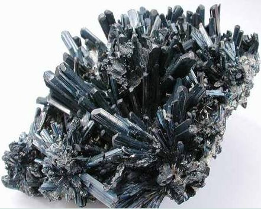
stibine
La stibine
était
connue et utilisée dans l'Antiquité comme fard pour les
yeux,
ainsi que l'indique le mot grec stibi
qui désigne ce fard d'après les notes de Pline.
Elle
a été également utilisée comme pierre
décorative
au Japon. Les cavités des filons de minerai de l'île
de Shikoku (Ishinokawa) renfermaient de nombreuses druses de cristaux
linéaires,
dont certains mesuraient 1 m de long et plusieurs centimètres de
large. Ces baguettes étaient utilisées par les Japonais
pour
l'entourage de leurs jardins miniatures, comme tuteurs pour les plantes
et en décoration de leurs intérieurs. La stibine
existe
dans des filons spéciaux de quartz comme principale composante,
habituellement aurifère ; on la trouve également dans
certains
gisements hydrothermaux de minerai
de plomb
et d'argent. Elle est souvent accompagnée par le cinabre,
l'orpiment et le réalgar. Mais les grands gisements de
stibine
dans le monde résultent du remplacement
métasomatique
des calcaires
et des schistes,
comme au Mexique (San José del Oro), en Algérie (Hamman
Meskoutine),
et en Chine (Si-Kvan-Tchan, dans la province du Kiang Si). Les
filons
de minerai représentent le type de gisements le plus
nombreux.
Ils sont abondants en France
(Auvergne, Vendée, Corse), en Allemagne
(Wolfsberg, Goldkronach), en Toscane, en Tchécoslovaquie
(Bohu-tin, Magurka, Kremnica), en Roumanie (Cavnic, Sacaramb, etc.) et
en Russie (Nikitovka). Certains de ces gisements sont
célèbres
pour la beauté et la taille des cristaux, comme Kostajnik
(Yougoslavie),
Pereta et Cetina (Italie) et Lubilhac (France).
Que peut-on
retenir
de l'antimoine de ces propriétés chimiques qui pourraient
plaider en faveur de son utilité dans le grand oeuvre ? Voyons
d'abord
les sels : on retiendra les sulfate Sb2(SO4)3
et nitrate Sb(NO3)3
; on sait aussi que l'antimoine est
soluble
dans plusieurs acides organiques dont l'acide
tartrique. Alors que le trisulfure
naturel -qui est décrit explicitement par E. Canseliet- et celui
qui est préparé par voie sèche sont noirs,
le produit obtenu par précipitation aqueuse a une belle couleur rouge-orangé
; il cristallise par chauffage en noircissant
; si la vapeur est refroidie très brutalement, le sulfure
vitreux
orangé est obtenu. Des dérivés organiques peuvent
être obtenus tels que les distilbines qui sont de synthèse
délicate : on utilise la méthode de Paneth qui consiste
à
utiliser des radicaux libres méthyle ou éthyle sur un miroir
d'antimoine déposé dans un
tube
de verre. L'antimoine peut être employé dans des alliages,
comme élément durcissant
à base d'étain et surtout de plomb. Voila les
éléments
que nous avons assemblés qui peuvent plaider en faveur de
l'antimoine...E.
Canseliet semble parler d'or à propos du stibium comme dans La
Femme sans tête (l'Alchimie, p.86) :
"Si
l'on a connaissance assez communément, que le cercle
crucifère demeure le signe de
la terre,
on ignore plus généralement, que ce symbole astrologique
évoquait aussi, en alchimie, la première matière
du
Grand Oeuvre, tandis que le même petit dessin désignait,
en
spagyrie, l'antimoine
ordinairement débité dans les drogueries".
D'abord, en
astrologie
- et nous savons de quoi nous parlons - on oublie trop souvent que le
soleil
ne fait rien d'autre que refléter le mouvement apparent de la
terre,
considéré précisément dans son mouvement
géocentrique
; dès lors, il serait beaucoup plus logique que ce symbole soit
remplacé par celui de la terre : autrement dit, le symbole
hermétique du  est...
est...  . Poursuivons... L'air
auquel il est fait allusion se rapporte à l'airain,
c'est-à-dire
à l'amalgame philosophique ou Mercure
préparé.
Toutefois, nous allons évoquer ici la figure du philosophe
Thémiste
[qui aurait peut-être
été l'ami de l'empereur
Valeus,
c. 364 av. J.-C.] dans un extrait tiré d'un de ses
ouvrages :
Des
éléments actifs, l'air et le feu :
. Poursuivons... L'air
auquel il est fait allusion se rapporte à l'airain,
c'est-à-dire
à l'amalgame philosophique ou Mercure
préparé.
Toutefois, nous allons évoquer ici la figure du philosophe
Thémiste
[qui aurait peut-être
été l'ami de l'empereur
Valeus,
c. 364 av. J.-C.] dans un extrait tiré d'un de ses
ouvrages :
Des
éléments actifs, l'air et le feu :
"L'air
universel est le ciel. Les vertus des autres corps y passent comme par
un crible. C'est le premier corps diaphane qui reçoit toutes les
qualités et n'en retient aucune. Il approche de la nature
spirituelle
et pour cela il est sous-entendu dans le magistère des sages
sous
le nom d'ange, de génie, de démon,
d'esprit.
La région inférieure de l'air est comme la gorge d'un
alambic,
par où les vapeurs montent jusqu'à sa partie
supérieure,
où elles se condensent en nuées par le froid, et,
réduites
en eau, elles retombent aussitôt. C'est ainsi que la nature, en
sublimant
et cohobant l'eau par une distillation assidue et
réitérée,
la rectifie et la fortifie. Dans ces opérations, la terre est
à
la fois la cucurbite et le récipient."
F. Hoefer [Histoire
de la chimie]
considère
que cette image, aussi vraie que grandiose, suppose une connaissance
trop
approfondie de la pratique et de la théorie de la distillation
pour
pouvoir appartenir à Thémiste le sophiste. La rosée
de mai évoque l'une des substances servant à
préparer
le dissolvant : il s'agit sans doute d'un carbonate, peut-être le
natron [carbonate de soude]
ou le borith [carbonate de potasse].
L'eau de la rosée est le
dissolvant
à l'état liquide, tel qu'il est obtenu à une haute
température. Cette rosée de mai se rapporte à  et à Thémis dont nous avons montré dans la
et à Thémis dont nous avons montré dans la

Clef VI des Douze Clefs de
Philosophie
section
sur les Gardes du
corps
de François II, qu'elle représentait
l'allégorie
masquant la chaux ou le carbonate de chaux. On peut en voir de nombreux
exemples dans l'iconographie [Douze clefs
de Basile Valentin, etc.] Le salpêtre des
philosophes
se rapporte au sel alkali qui constitue le
Mercure philosophique ; il n'a donc à voir qu'indirectement avec
le nitre dont l'emploi est antérieur et se place au 2ème
oeuvre qui a trait à la préparation du Mercure. Le texte
de Sethon se place donc à un
moment
du travail qui se situe au début du 3ème
oeuvre
et dont l'objet est d'abord d'animer ce Mercure qui, seul, peut «
ouvrir » les métaux. Quant au bélier qui est le
symbole
de l'eau des sages, il se rapporte à cet antimoine saturnin dont
nous avons dévoilé l'identité dans la section sur
la prima materia
et sur les Gardes
du
corps. Cette eau des sages, c'est aussi le lait de la Virgo
paritura, maintes fois évoquée, dont le
nectar
nourrit
Apollon au 2ème oeuvre. Le sens du chêne nous
est
à présent connu par le truchement de son parasite,
la galle.
Cette noix de galle a des rapports avec l'ionosphère dont parle
E. Canseliet dans ses Etudes de symbolisme. En
effet, sous le
rapport
même du volume, on ne sera pas étonné que les
proportions
soient presque semblables entre d'un côté la masse du
Compost
et celle du Soufre, comparée à celle du chêne et de
la galle qui contient le kermès ou teinture. Sous cette
allégorie
d'une grande poésie, les alchimistes ont caché un haut
point
de science sur laquelle nous pouvons donner à présent
quelque
éclaircissement. Et d'abord, prenons le chêne ; en latin,
on a vu qu'il en existait de plusieurs sortes : le chêne kermès
ou chêne méditerranéen, le chêne rouvre,
dédié
à Jupiter [donc à Thémis]
et le chêne robur [variété
très dure qui symbolise l'airain, i.e. l'amalgame philosophique].
En grec, le chêne [druV]
contracte des rapports, par voie d'assonance avec priV,
la fleur du chêne kermès, c'est-à-dire le
kermès
par le truchement de prinoV
[chène yeuse
et aussi chêne kermès]
et aussi avec l'action de « fixer, attacher, serrer
fortement »
par priw.
Le chêne constitue donc cet airain sur lequel vient se fixer la
« noix
de galle » traduit par khkiV
[matière
qui fond sous l'action du feu : il s'agit de la matière
philosophique
qui se dissout dans l'airain par l'intermédiaire du feu secret ;
elle permet par khkaV
de comprendre pourquoi les adeptes parlent « d'outrages,
d'insultes
»].
Le pseudo-Flamel, sans doute Arnauld, sieur de la Chevalerie, dans les Figures
hiéroglyphiques écrit à un moment
qu'il
faut se souvenir « d'un vieux chêne creux ».
Or,
en grec, un vieux chêne creux se dit sarwniV
[qui
se rapproche de Sawnitikh
: syrte,
qui a rapport avec le sable, c'est-à-dire la silice].
Et nous avons vu, dans les expériences d'Ebelmen,
que la silice servait de « fixateur
»
au médiateur salin qu'elle empêche de se volatiliser
précocément.
Nous reverrons bientôt l'emblème du chêne en liaison
avec le bouclier lors de l'évocation de l'écu de Tentzel.
2.
Ici, Philalèthe parle du deuxième chaos,
c'est-à-dire
du mélange Lion vert-Rebis. C'est bien ainsi qu'il faut
comprendre
Fulcanelli (Myst., p.95) :
"Quant
à l'allégorie du mélange ou de la combinaison de
cette
eau primitive issue du Chaos des Sages, avec une seconde
eau de nature
différente... [résulte]
une troisième eau
qui ne mouille point les mains, et que les Philosophes ont
appelée
tantôt Mercure, tantôt Soufre, selon qu'ils envisageaient
la
qualité de cette eau ou son aspect physique".
A priori, il
semblerait
bien qu’en fait, deux substances soient appelées Mercure
ou Soufre en
fonction de leur qualité (liquide ou solide) ou de leur couleur
(blanc ou rouge). Le Chaos des Sages
représente le
sujet
minéral brut. Ce sujet, symbolisé par le globe
crucifère,
n'est autre chose que cette « terre damnée » ou Lucifer  [Vénus -
Aphrodite]. L'eau
primitive,
issue de ce chaos, n'est autre que de l'eau
de chaux. Cette première eau est
utilisée
dans une 2ème solution qui procure de la potasse
caustique.
Une autre interprétation - peut-être plus proche de la
vérité
compte tenu des possibilités de nature -
consiste à considérer deux opérations : dans la
première,
le Chaos des Sages symbolise des matériaux
salpêtrés
qui fournissent le nitre [cf.
section sur le salpêtre]
; l'eau primitive est l'opération par laquelle le salpêtre
se trouve purifié ; dans un second temps, ce salpêtre
purifié
est mis à fondre dans un creuset (2ème eau)
qui
procure l'alkaest de Glauber
: il correspond sans doute au borith
des Anciens. Enfin, la troisième eau est le dissolvant univerel
ou Mercure philosophique
dont l'animation procure l'ouverture des métaux.
L'expérience
montre qu'un autre corps doit être ajouté au Mercure afin
de le fixer ; nous avons parlé plus haut de cette substance qui
est universellement répandue. Par combinaison
avec
le 1er Mercure et le Sel
des Sages, ces 2 solutions donnent
lieu à un 3ème mélange qui,
à
froid,
est « une
eau qui ne mouille point les mains »
; il faut entendre ici une eau
ignée.
Pour le reste, les alchimistes ont souvent dit que deux matières
étaient nécessaires à l’ouvrage, un minéral
et un métal. Il
y a donc lieu
d’être
prudent et il est presque certain qu’à un moment donné,
le métal,
qui doit correspondre au Soufre,
est incorporé au Mercure ; dans un premier temps, le Mercure,
à l’état hydraté, doit apparaître sous une
forme
pâteuse ou gélatineuse après sa séparation
d'avec
le sujet minéral,
lequel est proprement détruit lors de cette opération ;
ce
premier Mercure, ensuite, est oxydé
et réduit à l’état anhydre où il
possède
alors une qualité qui le rapproche du Soufre et du principe
fixe. C’est peut-être ce
qu’évoque
Fulcanelli quand il parle du soufre corporifié (Myst.,
p.138) :
[Vénus -
Aphrodite]. L'eau
primitive,
issue de ce chaos, n'est autre que de l'eau
de chaux. Cette première eau est
utilisée
dans une 2ème solution qui procure de la potasse
caustique.
Une autre interprétation - peut-être plus proche de la
vérité
compte tenu des possibilités de nature -
consiste à considérer deux opérations : dans la
première,
le Chaos des Sages symbolise des matériaux
salpêtrés
qui fournissent le nitre [cf.
section sur le salpêtre]
; l'eau primitive est l'opération par laquelle le salpêtre
se trouve purifié ; dans un second temps, ce salpêtre
purifié
est mis à fondre dans un creuset (2ème eau)
qui
procure l'alkaest de Glauber
: il correspond sans doute au borith
des Anciens. Enfin, la troisième eau est le dissolvant univerel
ou Mercure philosophique
dont l'animation procure l'ouverture des métaux.
L'expérience
montre qu'un autre corps doit être ajouté au Mercure afin
de le fixer ; nous avons parlé plus haut de cette substance qui
est universellement répandue. Par combinaison
avec
le 1er Mercure et le Sel
des Sages, ces 2 solutions donnent
lieu à un 3ème mélange qui,
à
froid,
est « une
eau qui ne mouille point les mains »
; il faut entendre ici une eau
ignée.
Pour le reste, les alchimistes ont souvent dit que deux matières
étaient nécessaires à l’ouvrage, un minéral
et un métal. Il
y a donc lieu
d’être
prudent et il est presque certain qu’à un moment donné,
le métal,
qui doit correspondre au Soufre,
est incorporé au Mercure ; dans un premier temps, le Mercure,
à l’état hydraté, doit apparaître sous une
forme
pâteuse ou gélatineuse après sa séparation
d'avec
le sujet minéral,
lequel est proprement détruit lors de cette opération ;
ce
premier Mercure, ensuite, est oxydé
et réduit à l’état anhydre où il
possède
alors une qualité qui le rapproche du Soufre et du principe
fixe. C’est peut-être ce
qu’évoque
Fulcanelli quand il parle du soufre corporifié (Myst.,
p.138) :
"C’est
pourquoi les Sages, sachant que le sang
minéral dont ils avaient besoin
pour
animer le corps fixe et inerte de l’or n’était qu’une
condensation
de l’Esprit universel, âme
de toute chose ; que cette condensation sous la forme humide, capable
de
pénétrer et rendre végétatifs les mixtes
sublunaires,
ne s’accomplissait que la nuit,
à la faveur des ténèbres,
du ciel pur
et
de l’air calme... les
Sages, pour ces raisons combinées, lui donnèrent le nom
de
rosée de Mai ".
Ce
sang minéral trouve son équivalent hermétique
dans
la noix de galle ; le corps fixe et inerte de l'or renvoie au squelette
silicato-alumineux ou « résine de l'or ». La
condensation
sous la forme humide va consister à animer le Mercure,
c'est-à-dire
à le fondre ; le problème est d'arriver à faire en
sorte qu'il ne se volatilise pas précocément. Autrement
dit,
il faut arriver à trouver un lien pour ce Mercure pour le fixer
assez longtemps. Voyez
encore les réflexions précédentes sur la
rosée
de mai (1,
2,
3).
Fulcanelli revient sur le chaos métallique (Myst.,
p. 168) quand il tente de donner une description charitable du premier
agent :
"Pour
obtenir le premier agent, il faut se rendre à la partie
postérieure
du monde, là où l'on entend gronder le tonnerre, souffler
le vent, tomber la grêle et la pluie ; c'est là qu'on
trouvera
la chose si on la cherche" (d'après Haymon, Epistola Haimonis de quatuor Lapidibus
Philosophicis, pp. 497-501, t. VI du Theatrum Chemicum).
Comme
d'habitude,
on aura intérêt à prendre cette recommandation avec
un grain de sel... et à renverser la proposition : c'est une
version
originale du renversement des pôles. Pour obtenir le premier agent,
nous aurons donc besoin d'un lieu serein
et d'un ciel pur
(1, 2, 3, 4),
à l'époque de l'équinoxe
du Printemps et de
préférence
de nuit [arcana nox].
Nous ajouterons expressément deux choses :
- que la
préparation
du sulfure d'antimoine a d'étranges analogies avec ce que
décrit
Haymon dans son Epistola (cf.
la Pierre
philosophale) ;
- que ces
« fèces » mercurielles sont
considérées habituellement par les alchimistes comme de
peu de valeur et doivent être rejetées [cf. section du tartre vitriolé] ;
Quant au
sujet grossier
de l'Oeuvre, on sait qu'on lui a donné tous les noms imaginables
afin d'induire les insensés en confusion. Les uns l'ont confondu
avec le Mercure commun (l'un
des composés du dissolvant universel)
tandis ques les autres l'ont identifié au hiéroglyphe
céleste
réservé au signe astronomique du Bélier (Ariès).
Ici, toutefois, on l'a dit, c'est momentanément le second
chaos qui retiendra notre attention. Nous
relèverons au passage cete sage remarque de Fulcanelli (Myst.,
p.198) :

Toyson d'or, hôtel Lallemant, Bourges [cliché
Alain Mauranne]
"Vous
comprendrez pourquoi la Toison
d'or est suspendue au chêne,
à la manière de la galle
et du kermès, et vous pourrez dire, sans offenser la
vérité,
que le vieux chêne
hermétique sert de mère au mercure secret."
Voila du
grand Fulcanelli
! Il en est de ces phrases comme de démonstrations
mathématiques,
qui nous semblent musicales à force d'être belles. On
pourrait
dire la même chose à propos d'un fragment de poème
de Mallarmé, véritable épitaphe :
"Tel
qu'en lui-même enfin l'éternité le change"
(Poésies,
Hommages
et tombeau, le tombeau d'Edgar Poe).
Pour notre
propos
cependant, ce fragment nous serait plus utile :
"De
l'éternel azur,
la sereine
ironie"
(Poésies,
l'Azur).
[Pour
la galle, voir 1, 2, 3, 4, 5, 6, 7, 8
; pour
le kermès, voir 1, 2, 3, 4, 5, 6, 7, 8; pour
le chêne, voir 1, 2, 3, 4, 5, 6, 7, 8 ]
Ce chaos
des Sages, dans lequel les quatre
éléments
sont enfermés, est dénommé -d'après
Fulcanelli-
pierre des philosophes (DM, I, p.241) ; l'Adepte se livre
ensuite
à une énumération de minéraux que nous
avons
évoqués ailleurs,
digne de Jules Verne ou de Georges Pérec, avant de dire
l'essentiel
:
"On
l'appelle encore dragon noir couvert d'écailles, serpent
venimeux, fille
de Saturne et « la plus aimée
de ses enfants »."
L'examen de
la postérité de
Cronos ne nous laisse le choix que d'une seule hypothèse : .
N'oublions pas que Zeus ne dut
d'échapper
à la mort uniquement parce que sa mère, Rhéa,
substitua
une pierre enveloppée de langes à l'enfant. Beaucoup
plus tard, il entra en rébellion contre son père et le
força
à restituer ses frères et se soeurs. Avec leur aide, il
combattit
les Titans fidèles à Cronos et s'empara pour toujours du
pouvoir. Il n'est pas difficile de comprendre que la phrase de
Fulcanelli
doit être renversée en genre et qu'il faut lire : "fils
de Saturne, le moins aimé
de ses enfants". Il faut prendre
garde,
au texte qui suit immédiatement (p.241) et à la page qui
suit (p.242 donc), et où Fulcanelli nous parle du Chaos de la
Création
(qui est alors le Chaos originel, i.e. le 1er chaos, soit le
1er Mercure) :
"Cette
substance primaire a vu son évolution interrompue par
interposition... d'un soufre infect... qui
en empâte
le pur mercure, le retient et le coagule."
et p. 242 :
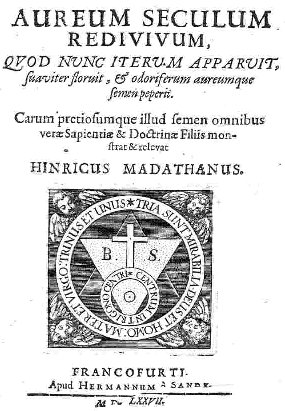
Madathanus, Aureum
seculum redivivum, 1677
"C'est
la raison pour laquelle ils ont dépeint symboliquement leur
matière
en son premier être sous la figure du monde,
qui contenait en soi les matériaux de notre globe
hermétique, ou microcosme,
assemblés sans ordre, sans forme, sans rythme ni mesure".
ce qui
correspond à un monde proprement corrompu.
L'emblème
de Madathanus est un classique de l'iconographie alchimique : on y voit
une digamma ou sceau de Salomon, symbole
double
[eau ignée et feu
aqueux],
un globe crucifère [la
Terre, hiéroglyphe de Thémis, voilant un sel de chaux qui
est la pierre de Jésus,
ancien
nom du gypse].
Le point central représente l'élément fixe,
peut-être
l'alkali fixe de Lémery. [cf.
aussi la porte alchimique de
la
villa Palombara]. Cette figure
représente le résumé du 1er
oeuvre ; on y trouve en effet le sujet
original
et la façon de le traiter afin de réaliser la
préparation
du Mercure philosophique. Sachez donc que le stibium
symbolise la Terre damnée qui, traitée par l'épée
du chevalier, servira à oindre
les enfants de Latone
; cette Terre sera ensuite préparée par l'eau et par le
feu,
dans le même temps : par là se trouve nommé la
première
matière. D'autres précisions sont données dans la
section sur les Gardes du
corps. On peut
dire bien
d'autres choses sur ce sujet des Sages : il est, en effet, assimilable
aux Titans [titan, proche
de titanoV
= chaux],
fils d'Ouranos et de Gaïa ; Ouranos est le firmament
qu'évoque
Philalèthe ; Cronos [assimilable
à l'épée du chevalier]
libère les Titans du sein de la Terre [Gaïa].
Après la chute de Zeus, ils furent plongés dans le Tartare
[TartaroV=
Tartaros personnifié s'unit à Gaïa et engendre Typhée
( = Tujwn)
; le monstre de Cilicie fut précipité dans le Tartare par
Zeus]. Au plan
hermétique,
on peut y voir les correspondances suivantes : Zeus représente
avant
tout l'air [aes],
c'est-à-dire l'Esprit. Or l'esprit en alchimie a toujours
été
assimilé au Mercure
philosophique,
c'est-à-dire
au dissolvant universel. Typhon n'est pas étranger à Héra
dont la légende rapporte qu'elle aurait pu enfanter ce monstre,
se vengant ainsi de Zeus : alors qu'elle était enceinte
d'Athéna,
la déesse Métis fut en effet avalée par Zeus qui
craignait
que l'enfant qu'elle portait ne vint à le détroner. Nous
voyons ici l'évidente correspondance hermétique. Zeus est
bien assimilé au Mercure,
qui, son temps révolu, doit laisser place à plus jeune
que
lui. Dans la légende, c'est Athéna
qui sort tout armée de la tête [Caput]
de Zeus. N'oublions pas qu'Athéna est la déesse qui
veille,
avec une bienveillance particulière, sur l'agriculture. Or, en
alchimie,
véritable « agriculture
céleste
», la pousse des épis est assimilée à la
naissance
des cristaux. Il y a plus, Athéna est la déesse qui
garantit
l'équité des lois et leur juste application : elle tient
donc de Thémis [la Justice]
mais aussi de la Prudence
[n'oublions pas qu'elle
est
fille de Métis, qui personnifie cette vertu]
et de la Tempérance
; par l'influence heureuse de sa raison et de sa pensée
réfléchie
et subtile, elle apporte aux arts l'énergie et l'inspiration
nécessaires
à un rayonnement spirituel étendu et constant.
Athéna
possède donc toutes les caractéristiques d'un Compost
canoniquement préparé. Son casque [cassus
è cassito = dégoutter]
atteste de son caractère chaulé
et ouvert. Il n'est pas sans intérêt de savoir que
c'est Héphaïstos
qui permit la naissance d'Athéna en fendant d'un coup de hache
le
crâne de Zeus. Précisément, Héphaïstos
présente des correspondances hermétiques du plus haut
intérêt
: il semble qu'il soit fils d'Héra qui le conçut sans
père
par jalousie vis-à-vis d'Athéna ; il serait alors frère
de Typhon, à moins qu'il ne s'agisse de Typhon lui-même.
Quoi
qu'il en soit, Héphaïstos avait un aspect gnomique [reportez-vous
aux deux gnomes de la cheminée
alchimique du château de Fontenay-Le-Comte]
et était particulièrement hideux, littéralement
«
dégoutant ». On dit qu'Héra le précipita
dans
la mer où il fut élevé par Téthys,
la mère nourricière
de l'Oeuvre. Il fut l'époux d'Aphrodite qui le trompa avec
Arès
en particulier : Héphaïstos surprit les deux amants en
flagrant
délit et les emprisonna dans un filet.
Héphaïstos est le dieu de la métallurgie et le
forgeron
officiel des héros. Héphaïstos joue donc, en
équivalent
hermétique, le rôle d'un agent qui catalyse
la cristallisation et qui permet de conjoindre les deux
extrémités
du vaisseau de nature [l'allégorie
de la prise au filet d'Arès et d'Aphrodite étant la
stricte
réplique de la prise au filet des poissons de la gravure de Lambsprinck
qui nagent dans la mer hermétique].
Ce
rôle d'agent
- qui consisterait à lier et
délier -
semble attesté par la légende qui veut que ce dieux
magicien
enchaîna sa mère -Héra- sur un trône d'or
qu'il
lui avait offert. D'une certaine façon, il semble que les
destins
d'Héphaïstos et de Typhée soient liés,
puisque
c'est sous la masse de l'Etna que Typhée, démon des
volcans,
passait, en général, pour expier, dans la chaleur et le
fracas
d'Héphaïstos, sa révolte contre Zeus. Dans une des
îles
Lipari, selon Pythéas, où officiait ce dieux boiteux, il
s'accomplissait des prodiges : si l'on déposait près de
certaines
crevasses du fer brut avec un peu d'or comme salaire, on retrouvait la
matin suivant, merveilleusement façonné, le travail qu'on
avait souhaité. On peut
continuer
ainsi à gloser sur le symbolisme ; par exemple, nous pourrions
ajouter
que la tête de Zeus [kraV]
peut être assimilée au sommet d'une montagne, celle que
l'on
voit sur une autre des gravures de Lambsprinck où l'on
aperçoit
le fils et le conducteur et que cette époque de l'oeuvre est
contemporaine
de l'apparition de l'alliage [krasiV]
ou amalgame philosophique. Fulcanelli,
p.400 des DM,
I, cite l'Introïtus
mais continue à parler du Chaos original alors que
Philalèthe
parle de l'un des constituants du Lion vert (ou dissolvant universel) !
E. Canseliet, dans son Alchimie,
au chapitre de l'Arbre
alchimique
commence à parler du premier état puis évoque le
second
chaos, car il nous parle :
"de
l'arbre sec, hiéroglyphe du corps mort... qu'il faudra
ressusciter
et animer par son eau
vive."
Plus loin,
nous sommes
certain que c'est bien du second Chaos
dont il parle car il évoque le chêne et nous assure que :
"Quand
on sait que les alchimistes appelèrent du nom de chaos leur
matière,
leur mater, on comprend mieux que le petit Jésus [comprenez
le Regulus]
soit venu au monde dans une caverne..."
On
rapprochera de
cette description allégorique les remarques de laboratoire de P.
Berthier et surtout de J.J.
Ebelmen. Nous prendrons garde, cependant, de ce que cette
scène
de la crêche puisse masquer au contraire un stade très
précoce
de l'oeuvre ainsi qu'on l'a dit dans un des chapitres
précédents
[Introïtus, III,le
petit-Jésus] Les
cristaux
apparaissent en effet dans des « cavernes » [argilla]
au sein de la masse mercurielle. Dans la Toison
d'or, c'est plus précisément qu'E. Canseliet
entretient
l'équivoque :
"De même devons-nous
nous souvenir de ce que nous
rapporte Fulcanelli de cette tête de diable qui se voyait
à Notre-Dame de Paris, que le peuple de Paris appelait Maistre Pierre du Coignet... offrant... le
saisissant hiéroglyphe du chaos
primordial...et là reposent en
outre la cause secrète... de la nativité nocturne,
à l'abri d'une caverne profonde, du tout petit enfant de
Bethléem de Juda."
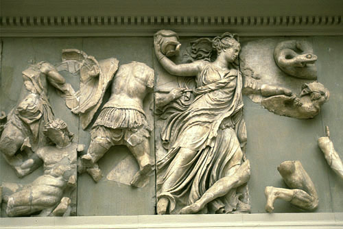
la Nuit
La Nuit ou Nyx
est, chez les Latins, une divinité qui n'a pas l'aspect
policé
des divinités de l'Olympe. Elle est la fille de Chaos,
combattant
sans cesse les forces de lumière, sous la forme d'une furie
désordonnée
et mystérieuse. Ainsi, contre toute apparence, la naissance dont
nous parle E. Canseliet est pleine de bruit et de fureur, s'effectue au
sein de la tempête et naît dans une première phase
de
grande instabilité. Là encore, on s'épuiserait en
vain à trier le bon grain de l'ivraie [au
sens propre de l'expression d'ailleurs]
et il est fort possible que la Nuit symbolise, là encore, cette
arcana nox, inséparable de la préparation de l'Arcanum
duplicatum. Cela, du coup, expliquerait aussi le caractère
double
de l'étoile des sages dont parlent les Adeptes. Quant à
la
pierre du coignet, c'est du début de l'oeuvre qu'il s'agit :
c'est
la maîtresse pierre du coin ou de l'angle, cette pierre
angulaire qu'évoque Fulcanelli (Myst.,
p.61) :
"Quant
à la taille de cette pierre
angulaire, - nous entendons sa préparation
-,
on peut la voir traduite en un fort joli bas-relief de l'époque,
sculpté à l'extérieur de l'édifice, sur une
chapelle absidiale, du côté de la rue du
Cloître-notre-Dame."
Nous
ajouterons que
cette pierre angulaire a pour nom cabalistique le Gay sçavoir :
"Les
anciens Incas l'appelaient Langue de cour, parce qu'elle était
familière
aux diplomates, à qui elle donnait la clef d'une double
science."
(Myst., p.58)
3. c'est-à-dire, traduit de
la Langue des Oiseaux, il s'agit d'un mystère scellé.
Le "scel" est bien sûr le vase de nature. Mais la portée
du symbolisme s'étend bien au-delà de ce terme.
N'oublions pas que l'Introïtus est écrit en latin : «
un mystère notable » se traduit donc par « insigne arcanum
». En deux mots, Philalèthe révèle la nature
du feu secret. Arcanum renvoie au tartre vitriolé et insigne
veut dire « remarquable, signé » ; nous avons vu
dans d'autres sections [Gardes du corps notamment] que deux signes brillants apparaissaient très
souvent, traduits du grec stibew ou marmaroV
qui se signalaient ainsi
très souvent à l'attention des lecteurs. Nous ferons dans
le chapitre 8 d'autres commentaires qui
viendront étayer un peu
plus ce que nous disons ici.
4. c'est littéralement l'appariteur, le grand
ordonnateur. Nous avons déjà envisagé ce point de
science ; on retrouve souvent cette image
dans l’iconographie, par exemple dans la VIe Clef de Basile
Valentin.

VIe Clef de Basile Valentin
Nous y voyons
un
évêque consacrer le mariage des époux royaux. On
doit
ici se rappeler d'une autre image, tirée du Théâtre
de l'Astronomie terrestre d'Edward Kelly ; il
écrit au
chapitre neuvième
"Les
anciens philosophes ont énuméré plusieurs types de
conjonction, mais afin d'éviter une vaine prolixité je
dirai,
sur la foi du témoignage de Marsile
Ficin, que la conjonction est l'union de
qualités
distinctes ou une équation de principes, à savoir, le
Mercure
et le Soufre, le Soleil et la Lune, l'agent et le patient, la
matière
et la forme. Lorsque la terre vierge,
ou féminine, est totalement purifiée et purgée
de toute superfluité, vous devez
lui
fournir un époux adéquat;
car lorsque le mâle et la femelle sont conjoints au moyen du
sperme,
une génération peut survenir dans le menstrue. La
substance
du Mercure est connue des Sages comme la terre et matière dans
laquelle
le Soufre de
la Nature est semé,
qu'il s'y puisse putréfier, la terre étant sa
matrice." [La conjonction du Soleil et de la Lune]

[Marcile Ficin était un
humaniste italien (1433-1499) ; encouragé par Cosme de
Médicis, il traduisit Platon et publia en 1482 une Théologie
platonicienne. Son rôle dans l'hermétisme de
la
Renaissance est capital puisqu'on lui doit la traduction du Corpus Hermeticum ; il effectua cette
traduction en
quelques mois, du vivant de Cosme qui mourut en 1464, et appela
sa traduction le Poimandres (du nom du premier
traité du Corpus Hermeticum). On trouvera cette histoire
bien
détaillée dans le Giordano Bruno et la
Tradition hermétique de Frances A. Yates (Dervy, réed. 1996 dont la
traduction française, toutefois, n'est pas sans
défaut) ainsi que dans la Révélation
d'Hermès Trismégiste
(A.J. Festugière,
Les Belles Lettres,
réed. 1990, 3 vol.). Marcile
Ficin peut être considéré comme l'homme le plus
savant de son époque et, comme on l'a dit, le propagateur le
plus zélé de la philosophie de Platon [outre
Platon, on lui doit des traductions des oeuvres de
Plotin, Jamblique, Proclus, etc.].
Il était, de plus, mis au nombre des alchimistes. Il se livra
à des occupations astrologiques, concurremment à ses
études philosophiques ; elles devaient le conduire aux
théories de l'alchimie. Le De arte
chemica [Bibliotheca Chemica
Curiosa,
t. II, pp. 172-183] ne semble pas
renfermer des observations originales ; il ne ferait [c'est
l'opinion de F. Hoefer] que reproduire les idées
spéculatives
et allégoriques des alchimistes de l'école arabe.]
Ce texte
d'E. Kelly
est assez clair : le principe mercuriel est bien une Terre
; il est issu de deux substances ; le Soufre est cette chaux
métallique qui trouve son équivalent dans la noix de
galle
: de là, ce sang minéral et ce sang des Innocents [cf. Fig.
hiér.]
évoqué plus haut. La Terre est bien cette matrice qui
assure
la dissolution des époux royaux -la vraie putréfaction-
avant
la « renaissance » ou rajeunissement du Corps : le
vieillard
doit alors faire place à plus jeune que lui ; c'est la vraie sublimation
philosophique. C'est donc bien
au mariage royal que nous convie E. Kelly : notez la similitude entre
ce
:
"vieil
homme [qui] transvase le contenu d'un second
urinal, à savoir du sang ainsi
qu'un enfant
ailé, dans un troisième qui
repose sur de la paille et contient la Lune
couchée
sur le dos dans de l'eau noirâtre"
et
le geste que
fait
le vieillard, à la droite du sacrement royal, dans la VIe
Clef de B. Valentin. Ainsi donc, nous assistons ici à
l'infusion
du Rebis, en son premier état, dans le vase de nature, l'eau
noirâtre
évoquant le Lion vert. Rapprochons
cette image de la figure XI du traité de Lambsprinck.
légende
:
"Le
Père et le fils sont unis par les mains avec le conducteur. On
doit
sous-entendre ici le corps, l'Esprit et l'Ame".
texte :
"Le
père, un vieillard est issu
d'Israël,
- Il n'a qu'un fils unique...- Un conducteur
lui impose douleur sur douleur...- Le conducteur a parlé en ces
termes au fils : - Je suis venu ici afin de te conduire en tous
lieux,
- A l'extrême cime de la montagne la plus haute..."
(in G. Ranque, la Pierre Philosophale, pp. 180-181).
Le
conducteur, figurant
sous l'aspect d'un vieillard avec des ailes (un ange) représente
une partie du dissolvant universel,
donc le Mercure philosophique
au même titre que l'évêque de B. Valentin. Il s'agit
du messager, de l'appariteur (viator), i.e. le moyen,
milieu ou procédé par lequel
le principe Soufre peut être uni au principe Mercure ou Sel (il
s'agit du 1er Mercure). L'extrême cime de la montagne
représente
une couleur bleu foncé
(caerula, caeruleus),
violette, qui n'est pas sans nous rappeler la couleur de la
fève,
noir bleuâtre. C'est le résultat de la conduite bien
tempérée
du feu secret à la toute fin de la Grande coction. Nous
ajouterons
que l'objet de la Grande coction est de réaliser la conjonction
des deux extrémités du vaisseau de nature,
c'est-à-dire
la cristallisation progressive des chaux métalliques [Âme]
au sein de la matrice formée de Terre [Corps]
dont nous parlons surtout dans la section sur le Mercure
(1, 2). Une autre image
de cette scène a été saisie dans une des planches
de Johann Daniel Mylius en son recueil, Philosophia reformata,
paru
en 1622. Nous en avons tiré la planche 5 :
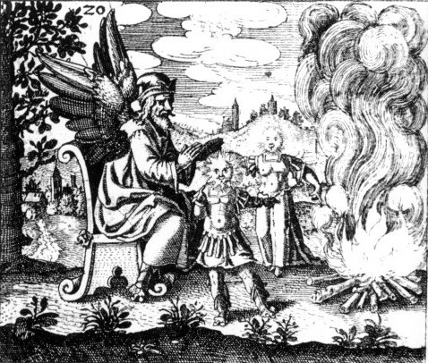
J. Van Lennep (Alchimie,
p.207) y voit un adepte ailé. Nous avons de bonnes
raisons d'y
reconnaître
notre appariteur dont le bonnet phrygien nous laisse deviner son lien
avec
Cybèle ; et plutôt qu'un réchauffement près
du brasier, ses mains évoquent davantage une sanctification des
deux principes sur lesquels il n'y pas lieu de s'étendre.
5.
C'est là une allusion, par assonance, au "sel armoniac" que l'on
a déjà
évoqué mais c'est non moins une allusion à
l'harmonie
et à la concorde. Il y a donc là double allusion que nous
avons trouvé aussi dans le texte d'Artephius
:
"... Prenez,
dit-il, de l'or brut feuilleté ou calciné avec du
mercure,
et jetez-le dans notre vinaigre [acetum :
vinaigre, esprit caustique], fait
d'antimoine
saturnien, de mercure et de sel de Jupiter dans un grand vaisseau de
verre...".
E. Canseliet,
dans
son Alchimie (L’arbre alchimique, p.105-125,
in Atlantis,
1934) évoque aussi ce pouvoir narcotique ou
sédatif
appliqué
aux éléments :
"Portant
ainsi, sur une branche supérieure, un oiseau noir, l’arbre
symbolise,
plus clairement encore, cette racine métallique qui
résiste
à merveille au pouvoir d’oxydation,
et qui assure, dans l’harmonie,
la naissance du corbeau, de cette terre obscure et nettement distincte
de la partie sous-jacente, blanche et volatile. Deux hommes,
âgés
et remplis d’expérience, discutent, avec animation, sur le
problème
de la capture pour laquelle vigueur et habileté sont
nécessaires".

Avec son
esprit rationnel
et systmatique, Isaac Newton s'est tourné vers tous les
procédés
"d'ouverture" des métaux et s'est servi notamment de la voie
"sèche"
; il s'agissait d'utiliser du sublimé corrosif (chlorure de
mercure
HgCl2, appelé encore sublimé vénitien)
pour ouvrir les corps de l'antimoine, de l'argent et de l'étain,
cela faisant suite à une idée de Robert Boyle d’utiliser
de manière conjointe le sublimé mercuriel et le « Sal
Armoniack » (chlorure d’ammonium
NH4Cl) afin d’augmenter le pouvoir " d’ouverture "
des
métaux.
Ce sel ammoniac des sages -donc de vertu philosophique- ou sel d'Ammon,
Fulcanelli nous en parle (DM, I, p.350) :
"... que
l'on écrivait jadis avec plus de vérité harmoniac,
parce qu'il réalise l'harmonie,
l'accord de l'eau et du feu, qu'il est le médiateur
par excellence entre le ciel et la terre... C'est encore le Signe... le
sceau qui
révèle... par certains linéaments superficiels,
les
vertus intrinsèques de la prime
substance philosophale".
On ne peut
pas être
plus clair ; pour les linéaments superficiels, nous renvoyons le
lecteur à l'analyse magistrale du
maître à
propos de la galette des rois
(Myst., p.190) dont la fève
n'est autre que ce petit baigneur
évoqué supra (1, 2).
C'est l'occasion d'évoquer ici un symbole dont nous n'avons pas
encore parlé : le X sur lequel revient
à
trois ou quatre reprises l'Adepte. C'est précisément au
sujet
du sel ammoniac dont la traduction reviendrait au X
dont il nous dit sur la même page (p. 350) que cette lettre est
l'hiéroglyphe
grec du verre. Il revient sur ce X à la p. 341 ; disons d'abord
que X a comme
correspondance grecque le c (
soit ks, xi),
l'initiale
des mots creuset,
or, et temps, de même que Christ.
On peut en rapprocher la croix de Saint-André X
dont le résultat est cet entre-croisement qui signale [qui
signe de ce scel]
la préparation canonique du dissolvant. Plus loin, nous avons
encore
droit à une de ces allégories dont Fulcanelli a le
secret,
où le Sujet des Sages est mis en équation : sXkOH
et commenté de cette remarque lapidaire : "Soufre
et potasse pour l'X". C'est encore pour lui l'occasion
d'insister
sur les moustaches du chat dont l'aspect radié évoque
assez
bien une mérelle. Cette
mérelle est l'une des inconnues du problème : c'est une
coquille (testa
= tuile, vase en terre cuite, écaille, carapace de tortue mais
aussi concha = coquillage
d'où l'on tire la pourpre de Cassius (1,
2, 3) (et calyx = coquille, carapace,
corolle des fleurs). C'est aussi une ammonite (pour Jupiter Ammon). Elle désigne aussi un métier, celui d'enlumineur (argent en coquille) et elle est enfin
assimilée à la mère de la lumière (DM,
I,
p.414). Fulcanelli nous décrit bien sûr la
mérelle de Compostelle (Myst., p.179)

mérelle de l'Hôtel Jacques
Coeur, Bourges [cliché Alain Mauranne]
dont la
symbolique
renvoie au Mercure, voyageur ou pèlerin.
Dans les DM, I, p. 339, la coquille
Saint-Jacques,
appelée
aussi bénitier, est décrite comme le qualificatif
appliqué
à l'eau mercurielle. À cette occasion, Fulcanelli nous
assure
que
la proportion régulière exige deux parts de dissolvant
contre
une du corps fixe. Ce corps fixe, enfin,
on l'obtient en se rendant dans une demeure souterraine [argiloV]
ce qui est conforme à ce qu'écrit Balinous
; ce n'est pas un travail de tout repos [argia]
car il s'agit rien moins que de renverser la terre [argiloV]
afin d'en extraire cette substance qui se signale [stibew]
par sa blancheur [arginoeiV]
; il serait vain [argoV]
d'en dire davantage. C'est donc un symbole complexe puisqu'il figure
à
la fois le Sujet des Sages
dont nous donnons sur la figure qui suit
l'exacte teneur encore que sa forme
soit un peu différente, mais c'est aussi un réceptacle,
en
l'occurence le vase du composé et le composé du vase (le
dissolvant). Et ce dissolvant, nous savons qu'il a
d'étroits
rapports
avec Diane aux cornes [keraoV,
proche de keramoV
= terre de potier]
lunaires ou lune cornée hermétique. Une indication sur ce
composé nous est fournie par E. Canseliet (Deux
Logis
alchimiques,
au chapitre : La rosée des philosophes et la Toison d'or)
quand il évoque la Toison
de Gédéon mondée
par la rosée du ciel.
C'est enfin, le résultat final, qu'évoque la pourpre de Cassius.
Sans doute devrons-nous aussi méditer cette recommandation qu'E.
Canseliet donne dans son Alchimie
expliquée sur ses textes
classiques,
au chapitre de l'Oeuf philosophique :
"... l'artiste
de la voie sèche... [ne doit pas trop] pousser vers la
pureté,
le sel blanc qu'il extrait du tartre
des tonneaux. Il convient, en effet, que sa crême de tartre
contienne,
encore et suffisamment, le carbonate de calcium, indispensable à
la coquille".
Une
dernière
indication d'E. Canseliet sur cette coquille ou « testa
» nous est donnée par son commentaire de l'Inscription
extérieure
(idem, p.61)
:
"...voici donc la photographie
(pl. VI) sur laquelle on
remarquera, qui surmonte la muraille, le chaperon des tuiles
dites canal, qualifiées aussi rondes ou
romaines..."

Nous
discutons de la crème de tartre dans une section
consacrée au Mercure philosophique et à la confection de
la Pierre ; il se trouve que le composé, qui par synthèse
nécessite le tartre des tonneaux, n'est autre que le carbonate de potasse. On doit l'obtenir pur ce qui est
contrôlé par sa couleur qui doit être parfaitement blanche. Retournons
à notre inconnue : X. On l'a dit, x est
une consonne complexe formée de k
et s, qui, par cabale, renvoient au potassium et au soufre.
La matière première serait donc représentée
par un sulfure ou un sulfate de potassium. Poursuivant dans la même voie, on pourrait
presque dire qu'il s'agit d'un AlK
lié. KOH, nul ne l'ignore, est la potasse caustique, base
forte. Son étymologie vient de Pottasche,
cendres de pot
et de Pott,
pot. Quant aux potasses carbonatées, elles existent dans les
cendres de bois... On pourrait très bien envisager une
combinaison avec un sulfate ; dès lors, on ne peut que rester
perplexe devant cette attirance des étudiants vers le nitrate,
qui, au vrai, ne peut conduire qu'au salpêtre
(voir 1, 2, 3)...
Nous
ajouterons que, parfois, manque de pot, ce ne sont point des météorites mais
bien des tuiles qui tombent : Savinien De Cyrano Bergerac en a fait,
hélas, l'amère expérience... Cet X, Fulcanelli y
revient aux DM, II, p.315 quand il examine le
Sundial du
palais Holyrood à Edimbourg
où
il nous assure que :
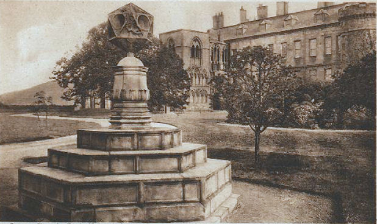
"Les
alchimistes grecs... assemblaient... deux consonnes du mot CLWROS(vert),
le X et le P juxtaposés. Or, ce chiffre
typique
reproduit exactement le monogramme grec du Christ, extrait de son nom
CRISTOS."
Nous devons
à
celui qui nous a révélé le rébus de
l'église
de St
Grégoire-du-Vièvre d'avoir insisté sur
l'importance,
en héraldique, du sinople (=
vert) :
"On pourrait, accessoirement, citer la Fête du Loup
Vert, réjouissance populaire dont l'usage s'est longtemps
maintenu à Jumièges, et qui se célébrait le
24 juin, jour de l'exaltation solaire, en l'honneur de
Sainte-Austreberthe. Or Jumièges n'est éloigné de
Saint-Grégoire que d'une quarantaine de kilomètres...
« Une
légende
raconte que la sainte blanchissait le linge de la célèbre
abbaye, où un âne la transportait. Un jour le loup
étrangla
l'âne. Sainte-Austreberthe condamna le coupable à faire le
service de sa victime, et le loup s'en acquitta à merveille
jusqu'à
sa mort. » (DM, II, p.316) Pourquoi la couleur verte? La
légende
ne le dit pas mais alchimiquement « le loup devint vert en
étranglant
et en dévorant l'âne. »
Cela est dû
au
fait que par la cabale le vert résulte du rouge. En
effet
le mot sinople (terme héraldique) vient du bas-latin sinopis
qui désigne d'abord la terre rouge de Sinope, avant de prendre,
au XIVème siècle, le sens de vert pour des raisons
inexpliquées
et qui signifiait à la fois rouge et vert ! La vertu
secrète
du vert vient de ce qu'il contient le rouge. C'est le sang du Lion Vert
des alchimistes, le sang du dragon (vert comme un reptile) qui est l'or
des philosophes."
Ce sel harmoniac donne
l'occasion à E. Canseliet -toujours dans la Toison d'or (Alchimie, p.204)-
de se livrer à une variation sur le thème de Phryxos :
"... quelle
étrange et mystérieuse parturition minérale
s'accomplit
sous la surface bouillonante du bain
incandescent... Néphélé
disparaît pour laisser la place à Ino
[Ino fut
appelée Leucothéa] qui
tient
le rôle du mercure mondé par les sublimations... Ino
était
la fille de Cadmos et d'Harmonie s'identifiant... le premier à
leur cadmie
(terre noire), la deuxième, à leur sel harmoniac
auquel le labeur philosophal doit d'avoir été
nommé
art de musique..."
Harmonie est
le fruit
des amours d'Arès et d'Aphrodite,
c'est-à-dire,
en équivalent chimique de l'acide vitriolique et du potassium ;
seuls deux candidats s'offrent à nous : l'alun
et le gypse. Nous n'avons plus besoin
d'insister
sur Arès,
qui ne renvoie à Aries que de façon
détournée
-notez le bien- signe du Bélier (1, 2, 3, 4, 5, 6)
et de l'époque canonique du début de l'oeuvre. Sur Aphrodite
une allusion directe en est donnée par E. Canseliet, dans la
2ème
préface aux DM, I, p.24 :
"Retourné
sur sa croix, le signe de la Terre
devient celui de Vénus ,
de cette Aphrodite
que les adeptes désignent, plus précisément comme
étant leur sujet minéral de réalisation."
Il faut
prendre garde aux propos, souvent envieux, de Canseliet ; Lucifer est
certes le sujet minéral en tant que dragon babylonien
assimilé au Chaos des Sages ; c'est donc en vain que l'on
oeuvrerait sur la stibine vulgaire. Fulcanelli
nous en
dit plus aux DM, II, p.197 :
"Mais
pourquoi Aphrodite
etArtémis
dominent-elles le cuivre et l'argent, sujets de Vénus et de la
Lune
?... Devons-nous accepter ces relations comme véritables..."
et de
conclure à
une confusion voulue et préméditée. Par notre
travail,
nous l'espérons, le lecteur aura été convaincu de
l'excellence du jugement de Fulcanelli, qui, sans trahir la
promesse
d'un silence assumé, a eu assez d'audace et d'intelligence pour
éclairer
d'un regard pénétrant cet arcane voilé. On n'en
dira
pas
autant d'E. Canseliet qui, somme toute, se révèle moins
charitable
que son maître et dont il faut scruter les notes de bas de page
et
les préfaces redondantes...
Aphrodite
renvoie donc non pas au cuivre, ainsi que nous le pensions
initialement,
mais à un sel de potassium [tartre,
salpêtre] ; cela n'est pas
étonnant
au vu de ce que nous savons désormais : voyez là-dessus
le tournoiement
du monde et à la parabole du Déluge. Aphrodite est le
symbole du sujet des Sages compris en tant que 1er Mercure,
c'est-à-dire en tant que Chaos original. Ses pouvoirs sont
immenses
: entre autres, elle fertilise les champs et protège les
mariages.
Mais son pouvoir peut aussi s'inverser et elle devient alors
une
déesse fatale dont la ceinture magique donne à celui qui
la ceint un étrange pouvoir de désir perpétuel ;
des
fruits comme les grenades
et les pommes lui sont consacrés ; parmi les oiseaux qui
trainent
son char, on trouve le cygne ou la colombe,
emblème de la fidélité conjugale. c'est ensuite
à
un compendium du grand oeuvre auquel on assiste : on pense qu'Aphrodite
est née du creux d'une vague, aussi blanche
et belle que l'écume.
Elle a conçu un amour passionné pour Arès,
mais surprise par son époux, elle est emprisonnée ainsi
que
son amant dans un filet.
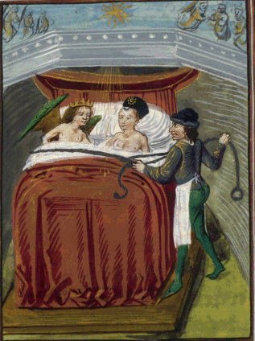
Vénus et Mars, surpris par Vulcain,
Français 137 , Fol. 46v
Ovidius, Metamorphoseon libri XV , Belgique, Flandre, XVe siècle
On retiendra
aussi ces lignes d'E. Canseliet dans son Alchimie expliquée
sur ses textes classiques, p.141 au chapitre de La
matière prochaine et de sa préparation :
"L'étudiant... devra
noter qu'Aphrodite montre sur son
bustier, à la hauteur de l'ombilic,
le globe crucifère, qui était réservé, dans
l'ancienne notation, à la stibine de même qu'à la
terre."
Nous attirons
l'attention
du lecteur sur le bustier,
car notre agrandissement montre plus qu'un simpletorse.
L'ombilic, nous le savons, correspond à l'origine du monde ; par
cabale, on peut aussi le mettre pour omphalos,
pierre conique sacrée ; elle était
vénérée
à Delphes et associée à Apollon
dont on aura garde d'oublier que sa soeur était Artémis.
E. Canseliet revient sur la signification de l'ammoniac, p. 168, et
conseille
au lecteur de rechercher sur les images 8 et 11 de son édition
du Mutus
Liber
deux petits symboles dont l'un est celui du tartre
et l'autre, précisément, celui de l'ammoniac
dont il est assez charitable pour révéler qu'il faut
l'entendre,
en cabale, comme l'harmoniac
des traités anciens, pour désigner le deuxième sel.
6.
Ce passage est des plus complexes sur le plan des correspondances ;
aussi
est-ce avec réserve que nous écrirons ces quelques
remarques
: sur le plan étymologique, le firmament
renvoie à appui
(firmamentum),
de firmare (= rendre
solide
au sens métaphorique de la Vulgate).
Le firmament de Philalèthe semble donc être la surface
du compost qui, de liquide, doit
progressivement
s'empâter.
7.
Il faut comprendre : "le milieu ou moyen permet
d'obtenir
une eau permanente [le dissolvant universel]".
8.
Bien au contraire, Fulcanelli semble formel pour certifier qu'à
partir d'un certain moment, l'oeuvre se parfait de lui-même
moyennant
bien sûr un certain régime de température.
9.
Cette union, au contraire, est le pivot du troisième oeuvre.
Encore
devrait-on parler plutôt de réunion ou de réincrudation.
Fulcanelli insiste sur ce point dans Myst., p.129
:
"Les alchimistes font allusion
à cette
opération lorsqu'ils parlent de réanimer les
corporifications,
c'est-à-dire rendre vivants les métaux morts... nous
devons voir en ce motif une variante de l'allégorie des Lions
vert et rouge, du
dissolvant et du corps à dissoudre".
<>
<>La
quinzième figure de Lambsprinck
vient à propos nous exprimer cela :
<>
légende :
"Ici
le Père et le Fils sont couplés en un seul afin de
demeurer
éternellement ensemble."
poème :
"Ici
le Père en dormant
- Est entièrement changé en Eau
limpide - Et par la vertu de cette Eau -
Est
préparé un bien unique
- En même temps qu'un Père nouveau fort et beau - Qui fait
aussi un nouveau Fils - C'est ainsi qu'en diverses choses - Ils
produisent
des fruits innombrables - ... - Le Père, avec le Fils,
résident
en un seul trône,
- Et la forme du vieux maître - Se
montre
au milieu [moyen]
- Vêtue d'un manteau couleur de sang..."
Ici, nous
assistons
au début de la coagulation ; la phase de la putréfaction
est passée ; l'Eau limpide renvoie à la dissolution
complète
dans le bain des astres ; le bien unique est le Rebis
qui est l'objet de la grande coction. Il faut donc bien comprendre que
ce dissolvant qui -selon certains Adeptes- ne comporterait pas la
moindre
trace d'acide ou de base, est nourri d'un feu extérieur bien
conduit
dont Fulcanelli nous indique la température : 1300°C. Cette
température est conforme aux observations que nous avons par
ailleurs
recueillies et qui peuvent être consultées ici.
Ce dissolvant permet :
"la réincrudation
de l'or naturel... sous la forme saline, friable et très
fusible... L'or
perd sa couronne... durant un certain laps de temps... il en
hérite
alors d'une seconde, infiniment plus noble que la première..."
(Myst., p. 181).
Ce qu'il faut
comprendre
ici est que les couronnes ne s'empilent pas l'une sur l'autre mais sont
acquises successivement, au plan chronologique.
10.
Ici commencent véritablement les opérations pratiques ;
il
est donc question d'un soufre particulièrement tenace, qui
infeste
le chaos primordial ; ce chaos primordial ou originel, nous avons
maintes
fois montré qu'il ne pouvait être qu'un sel double de
potassium
et d'un autre métal, celui-ci trivalent. Voyons d'abord comment
procéder à la synthèse de l'alun ou sulfate
d'alumine
et de potasse. Les deux textes que l'on va
lire
ont été adaptés des textes originaux : il s'agit
des Notions
préliminaires de chimie (M.F. Malaguti, 1866) et
du tome
premier du cours de chimie : l'histoire des sels. La chimie
végétale
et animale de M. Gay-Lussac (Pichon et Didier, Paris, 1828).
Alun
I
L'alun
s'obtenait
ordinairement avant de l'alunite ou alun
de
Rome de forme cubique. Dans presque toute
l'Europe, il pouvait se fabriquer aussi à partir d'un sel
de potasse avec le sulfate
d'aluminium artificiel. Ainsi, à
Paris,
pouvait-on obtenir ce dernier sel en chauffant ensemble l'argile
de Vanves et de l'acide sulfurique. Les argiles se composent avant tout
d'alumine et de silice ; elles renferment aussi de l'eau et de l'oxyde
de fer. Par calcination, on rend l'argile facilement attaquable et on
"sur-oxyde"
le fer qui pourra se séparer ensuite facilement. Dans d'autres
localités
de France, en Allemagne et en Angleterre, on extrait le sulfate
d'alumine
des schistes alumineux,
ou ardoisiers ou d'autres minéraux contenant des pyrites de fer
et des matières charbonneuses. Ainsi, les schistes sont-ils des matières
minérales argileuses et qui
contiennent
de l'alumine.
|
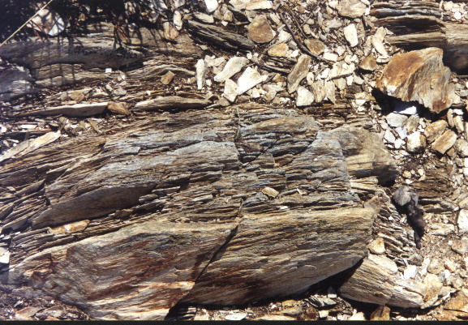
Schistes
primaires
Si
l'on
calcine à l'air un mélange de schistes et de pyrites
de fer, les schistes se désagrègent et leur
composé
argileux se modifie en sorte qu'il devient facilement attaquable par
les
acides ; les pyrites,
quant à elles, se combinent avec l'oxygène de l'air : le
fer s'oxyde et le soufre se convertit en acide sulfurique. De la sorte,
toute la portion de cet acide -qui ne se combine pas avec le fer-
oxydé-
va produire du sulfate d'alumine, par action sur l'alumine du schiste.
A noter que pour des schistes facilement altérables, on se
contente
de les mettre en plein air et de les
humecter
de temps en temps : ils
s'échauffent
alors spontanément, s'affaissent et se transforment en une masse
pulvérulente que l'on peut lessiver. D'autres schistes peuvent
être
stratifiés avec des fagots ou des
branchages
: on met le feu au centre et l'on conduit la combustion en ouvrant par
endroits des évents. Les cendres qui en proviennent sont
concentrées
par évaporation jusqu'à cristallisation. Les eaux
mères
contiennent le sulfate d'alumine.
Si on ajoute alors du sulfate de potasse ou du chlorure de potassium,
on
obtient de l'alun.
On peut aussi former de l'alun à partir d'argiles
pyriteuses qu'on laisse effleurir à
l'air ; on peut trouver ces pyrites en Picardie. On les abandonne au
contact
de l'air : le soufre se change en acide sulfurique, l'alumine prend une
portion de cet acide et forme du sulfate d'alumine. En faisant
évaporer,
on obtient une cristallisation de sulfate de fer et les
eaux-mères
contiennent le sulfate d'alumine,
avec un peu de sulfate de fer. On peut traiter ces eaux-mères
par
le sulfate de potasse ou le sulfate d'ammoniaque
pour avoir l'alun. Le grand avantage de traiter par du sulfate
d'ammoniaque va consister en la formation
d'alun à base d'ammoniaque : exposé à la chaleur,
il se décompose totalement . Il se dégage alors de
l'oxygène,
du gaz sulfureux et du sulfate acide d'ammoniaque ; il reste de l'alumine
pure.
|
Arrétons-nous
ici un instant : on voit que l'on pouvait facilement se procurer du
sulfate
d'alumine à partir d'un grillage de schistes
avec de la pyrite ou simplement en
laissant
à l'air libre
et en humectant
certaines variétés de schistes. Voila qui rappelle
singulièrement
des textes alchimiques dont on se rend compte, par là, que loin
de renvoyer au travail du troisième oeuvre par ce travail
d'imbibition,
ils portent sur le travail initial, c'est-à-dire
l'équarrissage
de la pierre des philosophes. Nous retiendrons pour l'instant que le sulfate
d'alumine peut s'obtenir soit à
partir
de l'alun soit directement à partir de schistes argileux, ce qui
est en accord avec nos remarques précédentes sur le sujet
(1, 2, 3, 4).
L'emploi de fagots ou de branchages évoque fortement ce passage
des Figures
Hiéroglyphiques de
N. Flamel quand il évoque l'acquisition du livre d'Abraham Juif:
"... il
me tomba entre les mains... un Livre doré, fort vieux et
beaucoup
large. Il n'étoit point de papier ou parchemin, comme sont les
autres,
mais il étoit fait de déliées
écorces (comme il sembloit) de tendres
Arbrisseaux... Quant au dedans, ses
feuilles
d'écorces
étoient gravées, et d'une grande industrie,
écrites
avec un burin de fer..."
Il est
évident
que Flamel ne nous décrit pas un livre mais la
préparation
probable d'un des corps du Grand Oeuvre, peut-être celle du Sujet
des Sages ; par ailleurs le mot arbrisseau renvoie à cistos
(ciste) et cistophoros (pièce de monnaie qui portait
l'empreinte
de la corbeille sacrée de Bacchus ; on peut y voir
éventuellement
une allusion aux sarments). Quant au
burin de
fer,
il renvoie directement à caelum [ciel, mais aussi ciseau,
burin],
outil qui permet de travailler le marbre
statuaire.
Le burin de fer est une allusion à un sel qui tient le milieu
entre
le gypse et l'alun.
En regardant ces
schistes, on s'aperçoit qu'au
détours d'un chemin, en se promenant dans la campagne, on
rencontre souvent de telles formations, d'aspect fibreux,
écailleux et qui évoquent quelque carapace... Le
problème est maintenant d'isoler l'alumine, donc de lui
ôter son soufre. Un des moyens consiste, à partir du
traitement de pyrites argileuses, à traiter les eaux-mères
résultant du lessivage de ces pyrites -s'effeuillant au contact de l'air- qui contiennent du sulfate d'alumine. Ce qui est
remarquable est alors ce procédé par le sulfate d'ammoniaque qui
permet -in fine- de "récolter" de l'alumine pure.
Reprenons :
Alun
II
Quand
on ne trouve
pas de l'alun tout fabriqué dans la nature, on le prépare
soit en lessivant de l'alunite calcinée soit en mêlant du
chlorure de potassium avec du sulfate d'alumine. On vient de voir que
ce
sulfate pouvait s'obtenir en traitant directement des argiles
calcinées
ou bien encore par voie ignée et à l'air, à partir
de schistes alumineux et pyriteux. Ainsi, on trouve en Hongrie et en
Italie
une pierre nommée alunite
; en chauffant cette pierre et lorsqu'on la lessive après
calcination,
on dissout de l'alun. Cet alun est cristallisé en cubes et est
très
pur. L'alun est beaucoup plus soluble dans l'eau bouillante que dans
l'eau
froide. Ainsi chauffé, il se décompose en deux sulfates :
le sulfate de potassium qui
reste
inaltéré et le sulfate
d'alumine qui se détruit :
après
la calcination, la matière est constituée d'un
mélange
d'alumine et
de sulfate de potasse. L'alun est soluble dans l'eau, en
quantité
variable en fonction de la température ; si l'on
élève
la température, il se boursoufle et présente une
matière
poreuse que l'on appelle alun calciné. Si l'on continue à
chauffer l'alun, il se décompose : le sulfate d'alumine peut
lui-même
donner de l'acide sulfureux, de l'oxygène et de l'alumine qui
reste
mélée avec le sulfate de potasse. On peut ensuite
séparer
l'alumine. Pour cela, il ne faut pas trop chauffer ; chauffé
avec
du charbon, l'alun donne le pyrophore
de Homberg. Il suffit de prendre de l'alun
avec un corps végétal, par exemple la farine ou le sucre.
On mêle 3 parties d'alun
à 1 partie de farine,
la matière se boursoufle et il faut attendre qu'elle se
dessèche
avant de l'introduire dans un matras. On obtient une masse que l'on
réduit
en poudre et
qu'on verse donc dans le matras en ayant soin de bien le luter ; on le
fait alors reposer dans un creuset rempli de sable : on chauffe
jusqu'au
rouge. L'alun se décompose et la matière
végétale
agit sur l'acide sulfurique par son charbon qui absorbe
l'oxygène
pour former de l'acide carbonique avec obtention d'un sulfure. Le
sulfate
d'alumine se décompose tout-à-fait car l'alumine n'a
point
d'affinité pour le soufre : l'acide sulfurique sera donc
détruit
et le potasse deviendra potassium. Le degré de calcination du
mélange
est très important à bien calibrer : on remarque en effet
dans le pyrophore
bien réalisé une combustion qui ressemble à celle
du soufre. L'opération doit être arrêtée
quand
il se produit une flamme bleue mais il faut la laisser persister
quelques
instants. On bouche ensuite le matras. Le pyrophore
se présente à nous comme une masse
noire qui est combustible au contact de
l'air.
On notera que ce phénomène ne survient pas dans de l'air
sec ou au contact d'oxygène sec : il faut que l'air
soit humide. Explication
: au contact de l'air humide, le sulfure de potassium brûle
facilement
et cette inflammation nécessite du charbon et du soufre en
excès
(ce qui est le cas car l'alumine est très divisée). Si
l'on
jette dans l'eau le pyrophore, il brûle immédiatement et
l'on
obtient du charbon et de l'alumine.
|
Arrêtons-nous
ici encore : cette fois, le procédé d'obtention de
l'alumine
pure passe par l'utilisation d'une matière
végétale ; on ne peut pas ne
pas faire le rapprochement avec certains textes qui nous parlent de pierre
végétale ou d'autres, plus récents, dus en
particulier
à Armand Barbault (l'Or du millième matin, J'ai
Lu,
1969). Cette masse noire
n'est pas non plus sans nous évoquer l'une des
putréfactions
de l'oeuvre (il y en quatre à en croire Le Breton).
La
décomposition
de l'alun permet de séparer le Soufre
blanc de l'Arcanum duplicatum [pour
en savoir plus, consultez les sections : tartre
vitriolé et chimie
et alchimie].
11.
Il s'agit donc bien d'ôter son soufre à la matière
première. Encore faut-il distinguer le Soufre puant dont parle
Nicolas
Flamel du soufre "comburant" dont parle Philalèthe. Le Soufre
puant
semble être l'enveloppe minérale qui entoure comme une
gangue
la portion "utile" du minéral ; l'autre soufre est lié au
composé lui-même et s'apparente à un sulfure ou
plutôt
à un sulfate. Notons à ce sujet que l'hydrogène
sulfuré
était connu des Anciens [cf.
section réincrudation].
12.
Ici, Philalèthe nous parle du soufre "vulgaire" qui s'incorpore
au corps désiré sous forme de sulfate, dans le premier
oeuvre.
Ce Soufre, nous en avons longuement parlé à plusieurs
reprises.
Au point où nous en sommes, nous pouvons distinguer trois sortes
de Soufre :
1)- le principe Soufre, c'est-à-dire l'élément fixe,
métallique, partie mâle du Rebis. Nous savons qu'il est
introduit dans le dissolvant en même temps que le principe
Mercure qui renvoie, lui, à la toyson
d'or ; on l'appelle aussi arsenic ;
c'est la partie fixe ou centrale du Rebis qui explique l'une de
gravures de l'Atalanta fugiens de M.
Maïer où l'on
voit un adepte tracer un cercle au compas : le cercle s'apparente ainsi
à la partie "mobile" ou volatile du Rebis et figure le Mercure ;

emblème XXI de l'Atalanta fugiens
2)- le soufre
vulgaire qui définit des sels existant sous forme de
sulfures
ou de sulfates
; nous avons toute raison de penser que le Sel des sages est un sel
double
où participe le potassium ;
3)- le soufre
hermétique : c'est celui dont parle Fulcanelli en disant que
la matière des philosophes a tantôt été
appelée
Mercure, tantôt Soufre, selon la présentation
physique qu'elle affectait au cours des
opérations
;
On
conçoit
donc la difficulté à plusieurs siècles de distance
et sans pouvoir travailler sur le texte latin, traduit en anglais et
retraduit
en français, d'analyser les "scels" divers et autres embuches
que
Philalèthe a dû semer tout au long de l'Introïtus...
13.
Philalèthe envisage ici la déshydratation de l'alun : on
a vu qu'il se dissout dans 18.4 parties d'eau froide. L'alun renferme
beaucoup
d'eau d'hydratation ; lorsqu'on le chauffe, il subit la fusion aqueuse
-ce qui nous rappelle là encore les textes anciens- ; refroidi
dans
cet état, il prend le nom d'alun
de roche ; chauffé davantage, il perd toute son eau -
débarassé
donc de son « humeur hydropique » - , se
boursoufle,
augmente considérablement de volume et devient anhydre : on
l'appelle
alors alun calciné. Si la température est très
élevée,
il se décompose sans subir la fusion ignée.
14.
Philalèthe fait allusion au Verbum
dimissum de Bernard, conte de la Marche Trevisane, (in Trois
Traitez de la philosophie naturelle, Paris, 1618). A noter
que
dans
sa Parole
Délaissée, Le Trévisan ne parle
pas
du premier oeuvre et n'envisage que la description de l'Eau permanente
(i.e. le dissolvant universel ou Lion vert).
15. Diane
en Tauride (Artémis) dont je
rappelle
qu’elle porte un flambeau
et que son front est surmonté d’un croissant
de Lune (Lune cornée). D’autres
dérivés
de la racine aes permettent de comprendre l’allusion au chêne si
chère à N. Flamel et à
Fulcanelli
: aesculatum
(forêt de chênes), aesculus
(chêne rouvre consacré
à
Jupiter qui se dit aussi robur dont une
autre
traduction est l’olivier). Artémis
(Diane) est aussi la fille de Latone. E. Canseliet nous en
parle
dans ses Deux Logis Alchimiques
dans le chapitre où il
nous
explique une partie du symbolisme de la porte alchimique de la villa
Palombara
:
"L'azoth
et le Feu en blanchissant Latone, paraîtra Diane sans
vêtement"
;
Sous
l'épithète
de Lune des philosophes
(blancheur, éclat
argentin, voir à ce sujet les DM, II,
p.150) se cache Diane ; ce corps a été
placé sous
la protection de Diane aux cornes lunaires (Lune
cornée) et il participe
assurément
du dissolvant universel. C'est enfin sous l'appellation de Lune
des Sages, de ce Mercure ou dissolvant,
qu'il
est question dans les DM, I, p.290 où l'Adepte nous
décrit
la captation progressive de la teinture
que le roi abandonne pendant son immersion et qui est la
propriété
spécifique de cet agent ou moyen.
Diane symbolise donc le réceptacle du 1er Mercure et
représente le vase de nature. On a déjà
indiqué
que des étrangers lui étaient sacrifiés (peregrinus
= étranger, voyageur),
c'est-à-dire
le 1er Mercure.
16. Littéralement, ce voleur [latro = voleur mais aussi garde du corps ; on joue sur les
assonances phonétiques : le « garde du Corps
» ne peut être que le Mercure]. Le larron renvoie aussi au verbe latro [aboyer] et a donc quelque rapport avec le chien du Corascène d'Artephius
(cf. la section sur le Soufre). Notons aussi,
et il s'agit d'une transition inattendue avec le rébus de St-Grégoire-en-Vièvre,
que jouer aux échecs se dit en latin « ludere
latrunculis » (de
latro = voleur) ; certes, les
Romains ne connaissaient pas le jeu d'échecs, mais ils jouaient
à un jeu semblable, les latroncules (site
du rébus). Quoi qu'il en soit, Fulcanelli nous en dit
quelques mots (Myst., p.136) :
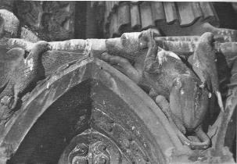
"Voici,
en allant de l'extérieur vers le pied-droit, le chien et
les deuxcolombes,
que nous rencontrerons décrits dans l'animation du mercure
exalté
; ce chien de Corascène,
dont parlent Artephius et Philalèthe... et ces colombes de
Diane,
autre énigme désespérante..."
Dans les
DM, I,
p. 322, il revient sur ce chien, mieux appelé chien de Khorassan
(pour : Khurasan, « lieu du
soleil », région de
l'Est
de l'Iran) :
"...le
chien de Khorassan, ou soufre, tire son appellation du mot grec Korai,
équivalent du corbeau [note
: que les Latins nommaient le corbeau Phoebeius
ales, l'oiseau d'Apollon ou du soleil],
vocable qui servait encore à désigner un certain poisson
noirâtre sur lequel, si nous en
avions
licence, nous pourrions dire de curieuses choses."
Ce poisson,
c'est
le chabot que nous avons déjà évoqué ;
c'est
par analogie la fève du gâteau des Rois. C'est le signe du
début de l'empâtement progressif de l'eau mercurielle. Il
s'agit donc du Soufre dont Fulcanelli nous parle, avant, p. 234, quand
il évoque Nicolas de Valois -au sujet
duquel il précise p. 324 qu'il fut pratiquement le seul, avec
Quercetanus [alias Joseph Du
Chesne, cf. Aureum Seculum Redivivum de
Mynsicht]
:
"[à
révéler] l'épithète
verbale
du soufre, or ou soleil
hermétique."
On trouve
deux manuscrits
attribués à Nicolas
Grosparmy et Nicolas de
Valois
:
1)-
MS. Français 19072 [Saint-Germain français 1642] 17th
Century.
133 folios. Paper. 260x177mm.
[Alchemical
collection: summarie and extracts from works of Nicolas Grosparmy, by
Nicolas
Le Valois and Pierre Vicot.]
[Cf.
MSS. Français 12246, 12298-9 and 14789.]
2)-
MS. Français 12246 [Supp. Fr. 2526] 18th Century. 126+151+4+65
pages.
Paper. 278x180mm.
1.
Abrégé de théorique [and] Secret des secrets [of
Nicolas
de Grosparmy].
2.
Le cinq livres de Noël de Valois, qui a laissé de grandes
terres
en Normandie, l'an 1449, amy et compagnon de Grosparmy, seigneur et
comte
de Flers. (d'après levity.com)
Fulcanelli
nous en
dit beaucoup sur ces alchimistes de Normandie :
Un siècle environ avant la construction du Manoir de
Lisieux trois compagnons alchimistes labouraient à Flers (Orne)
et y réalisaient le Grand OEuvre, l'an 1420. C'étaient
Nicolas de Grosparmy, gentilhomme, Nicolas ou Noël Valois,
nommé encore Le Vallois, et un prêtre du nom de Pierre
Vicot ou Vitecoq. Ce dernier se qualifie luimême « chapelain et serviteur
domestique
du sieur de Grosparmy ». Seul, de Grosparmy
possédait quelque fortune, avec le titre de Seigneur et celui de
comte de Flers. Ce fut pourtant Valois qui découvrit le premier
la pratique de l'Oeuvre et l'enseigna à ses compagnons, ainsi
qu'il le donne à entendre dans ses Cinq Livres. Il avait alors
quarante-cinq ans, ce qui reporte la date de sa naissance à l'an
1375. Les trois Adeptes écrivent différents ouvrages,
entre les années 1440 et 1450. Aucun de ces livres n'a
d'ailleurs jamais été imprimé. D'après une
note annexée au manuscrit n° 150 (125) de la
bibliothèque de Rennes, ce serait un gentilhomme normand, M.
Bois Jeuffroy, qui aurait hérité de tous les
traités originaux de Nicolas de Grosparmy, Valois et Vicot. Il
en vendit la copie complète à « feu M. le comte
de Flers, moyennant 1 500 livres et un cheval de prix ». Ce
comte de Flers et baron de Tracy est Louis de Pellevé, mort en
1660, qui était arrière petit-fils, du côté
des femmes, de l'auteur Grosparmy.
Mais
ces trois Adeptes, qui résidaient et travaillaient à
Flers dans la première moitié du XVe
siècle, sont cités sans la moindre raison comme
appartenant au XVIe siècle. Dans la copie que
possède la bibliothèque de Rennes, il est cependant dit
clairement qu'ils habitaient le château de Flers, dont Grosparmy
était propriétaire, « auquel
lieu ils firent l'Oeuvre philosophique et composèrent leurs
livres ». L'erreur initiale, consciente ou non,
provient d'un anonyme, auteur des notes intitulées Remarques,
écrites en marge de quelques copies manuscrites des oeuvres de
Grosparmy, ayant appartenu au chimiste Chevreul. Celui-ci, sans
davantage contrôler la chronologie fantaisiste de ces notes, fit
état des dates, systématiquement reculées d'un
siècle par le scripteur anonyme, et tous les auteurs, marchant
à sa suite, colportèrent à l'envi cette erreur
impardonnable. Nous allons, brièvement,
rétablir la vérité. Alfred de Caix, après
avoir dit que Louis de Pellevé mourut dans la détresse en
1660, ajoute :
« D'après le document qui
précède, la terre de Flers aurait été
acquise de Nicolas de Grosparmy ; mais l'auteur des Remarques est ici en
contradiction
avec M. de la Ferrière L, qui cite à la date de 1404 un
Raoul de Grosparmy comme seigneur du lieu.»
Rien n'est plus vrai, quoique, d'autre part, Alfred de Caix paraisse
accepter la chronologie falsifiée de l'annotateur inconnu. En
1404, Raoul de Grosparmy était effectivement seigneur de
Beuville et de Flers, et, bien qu'on ne sache à quel titre il en
devint propriétaire, le fait ne saurait être
révoqué en doute.
« Raoul de Grosparmy, écrit le
comte Hector de la Ferrière, doit être le père de
Nicolas de Grosparmy, qui, de Marie de Roeux, laissa trois fils, Jehan
de Grosparmy, Guillaume et Mathurin de Grosparmy, et une fille,
Guillemette de Grosparmy, mariée le S janvier 1496 à
Germain de Grimouville. A cette date, Nicolas de Grosparmy était
mort, et Jehan de Grosparmy, baron de Flers, son fils
aîné, et Guillaume de Grosparmy, son second fils,
accordèrent à leur soeur, en considération de son
mariage, trovs cens livres tournoys argent comptant, et une rente de
vingt livres par an, rachetable pour le prix de quatre cens
tivyestouynoys. »
Voilà donc qui est parfaitement établi : les dates
portées sur les copies des divers manuscrits de Grosparmy et de
Valois sont rigoureusement exactes et absolument authentiques.
Dès lors, nous pourrions nous dispenser de rechercher la
concordance biographique et chronologique de Nicolas Valois, puisqu'il
est démontré que celui-ci fut le compagnon et le
commensal du seigneur-comte de Flers. - Mais il convient encore de
découvrir l'origine de l'erreur imputable au commentateur, si
mal informé, des manuscrits de Chevreul. Disons aussitôt
qu'elle pourrait provenir d'une homonymie fâcheuse, à
moins que notre anonyme, en truquant toutes les dates, n'ait voulu
faire honneur à Nicolas Valois du somptueux hôtel de Caen,
construit par l'un de ses successeurs.
Nicolas
Valois passe pour avoir acquis, vers la fin de sa vie, les quatre
terres d'Escoville, de Fontaines, de Mesnil-Guillaume et de Manneville.
Le fait, cependant, n'est nullement prouvé ; aucun document ne
le confirme, sinon l'affirmation gratuite et sujette à caution
de l'auteur des Remarques susdites. Le vieil alchimiste, artisan de la
fortune des Le Vallois et seigneurs d'Escoville, vécut en sage,
selon les préceptes de discipline et de morale philosophiques.
Celui qui écrivait, en 1445, pour son fils, que : « la patience est l'échelle des philosophes, et
l'humilité la porte de leur jardin », ne
pouvait guère suivre l'exemple ni mener le train des puissants
sans faillir à ses convictions. Il est donc probable qu'à
soixante-dix ans, dépourvu d'autre préoccupation
matérielle que celle de ses ouvrages, il acheva au château
de Flers une existence de labeur, de calme et de simplicité, en
compagnie des deux amis avec lesquels il avait réalisé le
Grand oeuvre Ses dernières années furent, en effet,
consacrées à la rédaction des oeuvres
destinées à parfaire l'éducation
scientifique de son fils, connu seulement sous l'épithète
du « pieux et noble chevalier », auquel Pierre
Vicot donnait l'instruction initiatique orale. C'est le prêtre
Vicot qui est effectivement sous-entendu dans ce passage du manuscrit
de Valois :
« Au nom de Dieu Tout puissant,
sçache, mon fils bien aymé, l'intention de nature par les
enseignemens cy apres declarez. Quand, aux derniers jours de ma vie,
mon corps prest d'abandonner mon âme, ne faisoit plus qu'attendre
l'heure du Seigneur et du dernier soupir, desir me prins de te laisser
comme un Testament et derniere volonté, ces paroles par
lesquelles te sera enseigné plusieurs belles choses touchant la
très digne transmutation metalique... C'est pourquoy je t'ay
fait enseigner les principes de la Philosophie naturelle, afin de te
rendre plus capable de cette sainte Science. »
Les Cinq Livres de Nicolas

l'hôtel
d'Escoville, Caen
[C'est Nicolas le
valois d'Escoville, riche négociant et, parait-il, le plus
opulent de la ville qui se fit construire cette belle demeure
renaissance de 1535 à 1538. Derrière une façade
sévère se cache une cour. En y entrant, on peut y admirer
un ensemble élégant largement inspiré de
l'influence italienne. Il
faut remarquer, entre autres, les statues de Judith tenant la
tête d'Holopherme, et de David tenant celle de Goliath. Acquis par Moisant de Brieu, celui-ci
y fonda en 1652 l'Académie de Caen. De 1754 à 1792, l'hôtel
d'Escoville servit de mairie à la ville de Caen. L'hôtel d'escoville, l'une des
plus belles productions normandes de la première renaissance a
été irrémadiablement mutilé par la seconde
guerre mondiale. ]
Valois, au commencement desquels figure ce passage, portent
la date de 1445, sans doute celle de leur achèvement, ce qui
donnerait à penser que l'alchimiste, contrairement à la
version de l'auteur des Remarques, mourut dans un âge
avancé. On peut supposer que son fils, élevé et
instruit suivant les règles de la sagesse hermétique, dut
se contenter d'acquérir les terres du
domaine d'Escoville, ou d'en toucher les revenus s'il les avait
héritées de Nicolas Valois. Quoi qu'il en soit, et bien
qu'aucun témoignage écrit ne vienne nous aider à
combler cette lacune, une chose demeure certaine, c'est que le fils de
l'alchimiste, Adepte lui-même, n'a jamais fait bâtir tout
ou partie de ce domaine ; il ne fit point davantage de démarche
pour l'entérinement du titre qui s'y trouvait attaché ;
personne, enfin, ne sait s'il vécut à Flers, comme son
père, ou s'il fixa sa résidence à Caen. C'est
probablement au premier possesseur reconnu des titres d'écuyer
et seigneur d'Escoville, du Mesnil-Guillaume et autres lieux qu'est
dû le projet d'édification de l'hôtel du
Grand-Cheval, réalisé par Nicolas Le Valois, son fils
aîné, en la ville de Caen. En tout cas, nous savons de
source certaine que Jean Le Vallois, premier du nom, petit-fils de
Nicolas,
« comparut
le 24 mars 1511, en habillement de brigandine et de salade, à la
montre des nobles du bailliage de Caen, suivant un certificat du
Lieutenant général dudit bailliage, daté du
même jour ».
Il laissa Nicolas Le Vallois, seigneur d'Escoville et du
Mesnil-Guillaume, né l'an 1494, et marié le 7 avril 1534
à Marie du Val, qui lui donna pour fils Louis de Vallois,
écuyer, seigneur d'Escoville, né à Caen le 18
septembre 1536, lequel devint, par la suite, conseiller
secrétaire du roi.
C'est
donc Nicolas Le Vallois, arrière-petit-fils de l'alchimiste de
Flers, qui fit entreprendre les travaux de l'hôtel d'Escoville,
lesquels exigèrent une dizaine d'années, de 1530 à
1540 environs. C'est au même Nicolas Le Vallois que notre
anonyme, trompé peut-être par la similitude des noms,
attribue les travaux de Nicolas Valois, son ancêtre, en
transportant à Caen ce qui eut Flers pour théâtre.
Au rapport de de Bras (Les Recherches et antiquitez de la ville de
Caen, p. 132), Nicolas Le Vallois serait mort jeune, l'an 1541.
« Le vendredy jour des Roys, mil cinq
cents quarante et un, écrit le vieil historien, Nicolas Le
Vallois, sieur d'Escoville, Fontaines, Mesnil-Guillaume et Manneville,
le plus opulent de la ville lors : ainsi qu'il se devoit asseoir
à sa table, à la salle du Pavillon de ce beau et superbe
logis, pres le Carrefour Saint-Pierre, qu'il avoit fait bastir l'an
precedent, en mangeant une huistre à l'escalle, luy a agé
deviron quarante sept ans, tomba mort subitement d'une apoplexie qui le
suffoqua.»
Oeuvres
manuscrites de Grosparmy, Valois et Vicot. Bibl. de Rennes, ms. 160
(124); fol. 90, Livre second de Me Pierre de Vitecoq, prebstre :
« A
vous, noble et valleureux chevallier, j'adresse et confie en vos mains
le plus grand secret qui fut jamais aperceu d'aucun vivant...»
Fol. 139, Récapitulation de Me Pierre Vicot, avec préface
adressée au « Noble et pieux chevallier »,
fils
de Nicolas Valois.
Oeuvres
de Grosparmy, Valois et Vicot. Bibl. nat., mss. 12246 (2526), 12298
et 12299 (435), XVIIe siècle. - Bibl. de l'Arsenal,
ms.
2516 (166, S.A. F.), XVIIe siècle. - Cf. bibl. de
Rennes,
ms. 160 (124), fol.139 : « S'ensuit la recapitulation de 'le
Pierre
Vicot, prebstre... sur les precedens ecrits qu'il a fait pour instruire
le fils du sieur Le Vallois en cette Science, apres 12 mort dudit Le
Vallois,
son père. »
[cf. bibliographie et Chevreul, critique d'Artephius]
Dans les
sculptures
de l'hôtel du Grand-Cheval ayant appartenu à Nicolas de
Valois,
on remarquait deux bas-reliefs :
"...L'homme
qui est dessus [sur le cheval] ...tient en sa main droite une longue verge
de fer..."
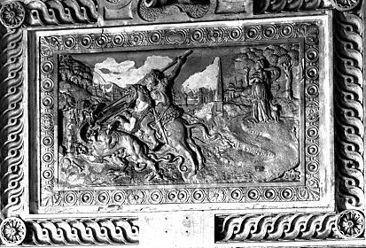
sculpture de l'Hôtel du
Grand Cheval (scène de la vie de saint Georges)
[La porte d'entrée de
l'hôtel était ornée dans son tympan d'un
remarquable bas-relief qui représentait "un homme à
cheval, en petit, sur un tas de corps morts et des chevaux que des
oyseaux mangent, il est tourné du côté de l'orient
... et, au-devant de luy le faux profette y est
représenté, et le dragon à plusieurs testes et des
cavaliers contre lesquels le cavalier semble aller. Il tourne la teste
en derrière, comme pour voir la représentation du faux
profette et du dragon qui entre dans un vieux château,
d'où il sort des flammes, dans lesquelles ce faux profette est
desja à moitié corps".
Ce bas-relief était surmonté par un "grand cheval en
l'air ayant des nuées soubs ses pieds de devant. L'homme qui est
dessus avoit une espée devant lui mais elle n'y est plus. Il
tient en sa main droite une longue verge de fer; au-dessus de luy et
derrière luy il paroist en l'air des cavaliers qui le suivent et
devant luy et au-dessus un ange dans le soleil ... Il y a de
l'écriture sur la cuisse du grand cavalier et à plusieurs
endroits comme le roys des roys, le seigneur des seigneurs et autres
tirés du XIXe chapitre de l'Apocalypse."]
L'analyse du
caisson 6 de la série n°7 du château de
Dampierre permet à Fulcanelli de revenir sur ce symbole :

"... les
deux serpents montrent des têtes
canines, l'une de chien, l'autre de
chienne,
version imagée des deux principes contraires, actif et
passif... mis
au contact du médiateur
figuré par la baguette magique...
Artephius
nomme ces principes chien de Corascène et chienne
d'Arménie... les
seuls agents... [qui] donnent naissance au mercure hermétique
vivant
et animé... Et comme ce double mercure possède double
volatilité, les ailes du
pétase,
opposées à celles des talonnières,
sur le caducée,
servent à exprimer ces deux qualités réunies..."
Ce double
Mercure correspond donc à la liaison du Mercure commun (qui est
le médiateur) et du 1er Mercure (ou Sel des Sages) ;
la double volatilité rend compte d'abord du caractère
« dissolu » des principes présents dans le
dissolvant. Le
problème réside dans la faculté que l'on a de
maintenir à l'état dissous et liquide un composé
qui normalement devrait se volatiliser ; ensuite du caractère
volatil du 1er Mercure dont la réincrudation
va marquer le début de l'empâtement du compost avant la
coagulation. Cette image doit être rapprochée de celle
qu'évoque Nicolas Flamel dans ses Figures
Hiéroglyphiques :
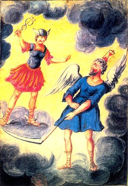
"Premièrement,
au quatrième feuillet il peignoit un
jeune Homme avec des ailes
aux talons, ayant une Verge caducée en main, entortillée
de deux Serpens, de laquelle il frappoit un Casque
qui lui couvroit la tête. Il sembloit, à mon avis, le Dieu
Mercure des Payens. Contre lui venoit courant et volant à ailes
ouvertes, un grand Vieillard,
qui avoit sur la tête une Horloge
attachée et en ses mains une faux
comme la Mort, de laquelle, terrible et furieux, il vouloit trancher
les
pieds à Mercure."
Ce jeune
homme avec
ces ailes singulières aux talonnettes est bien sûr le
Mercure
(1er Mercure).
Le caducée a été étudié ailleurs.
Nous rappellerons néanmoins qu'il représente dans
l'iconographie
le pivot ou axe sur lequel viennent s'enrouler les deux serpents qui
symbolisent
le double Mercure. C'est le centre ou moyen, véritable milieu
qui
permet l'empâtement progressif des deux principes et la naissance
du Regulus. Le casque, qui est, au vrai, son pétase,
renvoie à cassis
(casque en métal,
mais
aussi rets, filet de chasse, toile d'araignée),
proche de cassiterinus (étain) qui n'est pas sans avoir des
rapports
importants avec le composant du vase de nature, si on l'entend avec un
grain de sel... Le grand vieillard, auquel
on attribue trop souvent le caractère propre au sujet des sages-
représente en réalité le Mercure
qui va s’animer. Ses ailes ouvertes
expriment
sa volatilité naturelle. Sa faux qui coupera les ailes au
Mercure
ailé est l'équivalent de la lyre
d'Orphée qui apaise le tumulte et
domestique
les animaux sauvages. L'horloge
-du grec hôrologion (qui
dit l'heure)- a peut être un
rapport avec les Heures,
déesses qui président aux saisons (régimes
de température) et qui
gardent
les portes du ciel.
Les Romains disposaient de clepsydres qui étaient des horloges
d'eau
(il était en outre
d'usage
d'en avoir deux). L'horloge peut
également
indiquer un processus devant être répété
périodiquement
: un passage du chapitre Alchimie et Spagyrie de
Fulcanelli (DM,
I, p.205) peut être cité à cet égard,
à
propos de St Vincent de Paul, pris par des pirates barbaresques :
"... et
attaquez si vivement que deux ou trois des nostres estant tuez et tout
le reste blessés, et mesme moy, qui eus un coup
de flèche qui me servira d'horloge
tout le reste de ma vie..."
Le chien de
Khurasan a fait l'objet d'une étude dans les Deux Logis
alchimiquesles Deux Chiens (Canseliet)
intitulée : à l'occasion de l'examen de l'un des caissons
du château
du Plessis-Bourré.
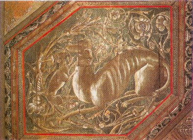
il nous y
parle du principe mâle. On notera la disproportion
évidente
entre lemâle et la femelle, ce qui est conforme à ce que
nous
supposons
du résultat de la grande coction. Le principe Mercure est
nettement
plus important en masse que le principe Soufre, celui-ci n'intervenant
qu'à l'état de trace, véritable teinture de la
"résine
de l'or". La note qui commente la peinture est importante :
"Quand
le soleil,
avec Sirius,
se lève et se couche dans le grand
Chien,
la chaleur grandit à
l'extrême,
qui est indispensable à tout
mûrissement... l'étudiant
se reportera... à ce que dit Calid, au chapitre De la force du
feu...-en
son Livre des Secrets."
Outre
l'image, qui
ne déparerait pas dans un poème du cercle des
Surréalistes
- on ne sait pas assez que nombre d'entre eux
s'intéressèrent
à l'alchimie et René Char non des moindres - , c'est
très
exactement la grande coction qui nous est ainsi dépeinte et
à
laquelle on peut ajouter cette note de Fulcanelli
dans Myst., p.162 :
"Au quatrième
degré de feu, en opérant
par voie sèche, il devient nécessaire d'entretenir une
température voisine de 1200°C, indispensable
aussi dans la projection."
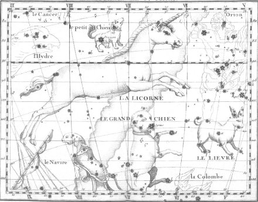
La Licorne et le
Grand chien, atlas de Flamsteed - Fortin, 1776
Comme on peut
le
voir, il n'est pas indifférent à notre propos d'examiner
les constellations de la zone qu'évoque E. Canseliet. Car ces
quatre
constellations évoquent bien des choses à
l'étudiant
: certes d'abord, Canis Major
et Canis Minor
; mais aussi le Monoceros
(Licorne ou unicorne) qui est flanqué du
Petit
Chien tandis que le Grand Chien, dont Sirius se projette sur sa gueule,
suit le Lepus. Le nom de Licorne apparaît en 1624 sur le
planisphère
réalisé par Bartsch, gendre de Kepler. Cette licorne fait
partie des animaux visibles sur le Petit traité de la Pierre
philosophale de Lambsprinck, au
côté du cerf
dont, nul ne l'ignore, les bois sont caducs. Ce sont des animaux qui,
avant,
se prenaient au filet. Donc, ce chien -exprimant le Soufre- est de
proportion
minuscule vis-à-vis de la masse mercurielle le retenant
prisonnier.
Mais, d'après E. Canseliet, :
"le
vocable Khorassan,
du grec Korax,
corbeau, évoque l'origine de cette âme
métallique... extraite
de la partie ténébreuse... [désignée]...
par
l'expression tête
de corbeau."
Par là
peut
est évoqué le lien du Mercure, soufre
fixe
[à rapprocher de
uncus
= grappin, crochet et de uncino = pêcher à
l’hameçon
; en grec, le grappin se dit korax,
qui signifie aussi corbeau].
De là, ces ancres, ces pêches à la ligne que l’on
retrouve
sur les planches du Mutus liber
ou
sur le poêle alchimique de Winterthur. E. Canseliet nous dit
encore
que le chien :
"renifle
les fesses du fou,
ésotériquement
les fèces du mercure qui... est...
le
maître
du Grand Oeuvre."
Cela pour
expliquer
que le 1er Mercure, au cours de sa préparation,
abandonne
nécessairement un corps subtil dont l'obtention est
indispensable
à la poursuite de l'oeuvre. Cette substance aurait-elle pu
être
connue des anciens alchimistes ? là est toute la question. Le
lecteur
se rapportera aussi à ce que nous avons écrit à
propos
du sulfure d'antimoine
et de son mode de captation (1,2).
Nous avons trouvé dans les traités de chimie
évoqués supra
des passages fort intéressants à propos du chrome dont
nous avons extrait et adapté quelques textes :
le
chrome (voir aussi notre section Soufre)
1)- Peut-on
trouver
du chrome en France ? : le chrome fut découvert par Vauquelin
(1797) dans des échantillons de plomb rouge venant de Russie. En
France, un minerai contient plus du tiers
des son poids d'oxyde de chrome ; on l'a
trouvé
pendant longtemps dans le département
du Var et il en existe des mines aux
Etats-Unis,
en Suède, dans l'Oural ; ce minerai porte le nom de fer
chromé. Cette substance est
considérée
comme une combinaison d'oxyde de fer et d'oxyde de chrome (FeO.Cr2O3)
et représente la source principale d'où l'on tire, par
traitment
spécial, le chrome à l'état de chromate alcalin.
Si
l'on calcine dans un four à réverbère 2 parties de
fer chromé avec 1 partie d'azotate de potasse, ce dernier sel se
décompose. Comme le fer chromé est associé
à
de la gangue quartzeuse, il se forme un silicate de potasse. La
solution
de ces deux sels, traitée par un excès d'acide
acétique, se décompose ; il
se dépose de l'acide silicilique et il se forme du bichromate
de potasse (alun de chrome) que l'on fait
cristalliser par évaporation. Ses principaux sels sont le
sesquioxyde
et le sesquichlorure de chrome.
2)- préparation
du sesquioxyde de chrome :
on peut le préparer par voie sèche et par voie humide. On
l'obtient anhydre par le premier procédé et
hydraté
par le second.
a)-
par
voie sèche : si dans un creuset, ou dans une cornue, on
chauffe
à une température ménagée, deux parties de
bichromate de potasse [de l'alun de chrome]
et un peu plus d'une partie de soufre, on obtient du sulfate de potasse
et du sesquioxyde de chrome. Par des lavages à l'eau bouillante,
on enlève le sel alcalin ; l'oxyde de chrome qui reste sera
ensuite
desséché et un peu grillé pour éliminer
pour
le débarasser du peu de soufre qui pourrait lui être
mélé.
Ainsi préparé le sesquioxyde de chrome a l'aspect d'une poussière
verte, non cristallisée. On
pourrait
l'obtenir sous forme de petits cristaux rhomboédriques,
isomorphes
avec l'alumine cristallisée, en dirigeant à travers un
tube
chauffé un liquide appelé acide chlorochromique qui
produirait
cette forme particulière de sesquioxyde cristallisé.
Quelle
que soit sa forme, il est inaltérable par la chaleur. Il n'est
pas
attaquable par les métalloïdes et n'est que difficilement
attaquable
par les acides, propriétés qu'il partage avec l'alumine
et le sesquioxyde de fer.
Son comportement s'apparente aussi à l'oxyde de
manganèse.
Il sert principalement à colorer en vert le cristal, le verre et
les pâtes céramiques.
b)- par
voie humide
: on ajoute à une dissolution concentrée de bichromate de
potasse une certaine quantité d'acide chlorhydrique. On fait
arriver
dans le mélange un courant de gaz acide sulfureux :
bientôt,
le liquide devient d'un beau vert-émeraude ; couleur qui annonce
le sesquichlorure de chrome. En versant de l'ammoniaque dans la liqueur
devenue verte, on détermine un précipité
gris-bleuâtre
de sesquioxyde de chrome hydraté. Lorsqu'on le chauffe
graduellement,
il devient tout d'un coup incandescent avant la température
rouge.
Dès ce moment, les acides n'ont plus prise sur lui. Le
phénomène
d'ignition qu'il manifeste avant d'atteindre la chaleur rouge indique
un
changement dans sa constitution moléculaire. Lorsqu'on abandonne
pendant plusieurs semaines dans un flacon mal bouché, 8 parties
de sesquioxyde de chrome hydraté desséché à
+100° avec 10 parties d'acide sulfurique concentré, on
obtient
un sel violet
: par une simple ébullition, ce sel devient vert
et à + 260°, il devient rouge.
Par ailleurs, l'oxyde tiré du sulfate violet est
gris-verdâtre
et celui qui est tiré du sulfate vert est gris-bleuâtre.
|
D'abord,
ce texte nous permet d'observer au §1 que, même avant
d'être
identifié comme un métal particulier, on avait
connaissance
de gîtes métallifères contenant du fer qui
possédait
une couleur ou une texture bien singulière. Au travers du
§2,
nous avons des indications sur des couleurs auxquelles se
réfèrent
souvent les alchimistes : le vert
et le violet.
Rappelons-nous à cet égard la légende de
Sainte-Marthe
que Fulcanelli évoque dans les DM, II, p.318. On remarque dans
ces textes une nette prédominance de la couleur purpurine ce qui
ne laisse pas d'étonner... Par ailleurs, on a vu que les Adeptes
disent que leurs opérations doivent se dérouler dans
l'obscurité.
Certes, par cabale, on peut comprendre qu'un ciel pur, la nuit, sera
propice
à la condensation de la rosée, dont nous avons maintes
fois
parlé [Arcanum
duplicatum]... Reprenons : une
particularité
rendrait-elle compte de l'utilité de protéger un
composé
des rayons solaires ? L'examen des textes précédents nous
apportera la réponse :
Préparation
de l'acide chromique
Si l'on
verse 1/2
volume d'acide sulfurique sur 1 volume d'une dissolution de bichromate
de potassium, saturée à +
50°,
la masse s'échauffe et devient d'un rouge ardent. En
refroidisssant,
elle laisse déposer de belles aiguilles rouges cramoisi
d'acide
chromique. La chaleur décompose cet acide en oxygène et
sesqui-oxyde
de chrome ; la lumière
en fait autant mais avec lenteur. Si l'on expose du linge ou du papier
qui auraient été plongés dans une solution d'acide
chromique, ils verdissent promptement. Tous ces faits ...placent
l'acide
chromique au rang des corps très oxydants et apprennent aux
chimistes
qu'il ne faut jamais filtrer à travers le papier ses
dissolutions,
ni les mettre en contact avec des matières organiques...
|
Ainsi
donc,
la préparation de l'acide chromique, à partir de l'alun
de
chrome, nécessite la mise à l'obscurité du
composé
; ne nous faisons cependant pas trop d'illusion : on trouverait
quantité
d'autres composés qui doivent rester à l'abri de la
lumière
sans que pour autant ils puissent être utiles de quelque
façon
que ce soit à l'élaboration du Grand Oeuvre. Un autre
point
singulier, qui sera le dernier que nous observerons, ne laisse pas de
présenter
des analogies avec le caractère quasi-enzymatique des
transmutations
métalliques que nous avons vu décrites ailleurs : nous
faisons
allusion à la très petite quantité de poudre de
projection
par laquelle on arrive à obtenir -soi disant- une
quantité
et une qualité d'or à nulle autre pareille dans la
nature.
Le
sesquichlorure de chrome
- Quand
on fait passer
du chlore sur un mélange intime d'oxyde de chrome et de charbon,
il se forme du sesquichlorure de chrome en paillettes couleur fleur de
pêcher. Chauffé dans un tube qui serait traversé
par
un courant d'hydrogène, il abandonne le tiers de son chlore et
se
transforme en une matière blanche qui est le protochlorure de
chrome.
Tandis que celui-ci est soluble, l'autre chlorure ne l'est pas, mais il
le devient instantanément si l'on
jette
dans l'eau où il se trouve suspendu, une quantité
infiniment petite de chlorure soluble. Un
corps qui, dans de pareilles circonstances, devient tout à coup
soluble, constitue l'un des faits les plus
bizarres de la chimie. On a voulu
l'expliquer
en disant que cette faible quantité de protochlorure de chrome
enlève
au sesquichlorure le chlore nécessaire pour [le maintenir, le
texte
dit pour devenir] à l'état de sesquichlorure
lui-même
: se formant au milieu de l'eau, il s'hydrate et s'y dissout : le
sesquichlorure,
ainsi réduit à l'état de protochlorure, exerce une
action semblable sur une nouvelle portion de sesquichlorure insoluble ;
de sorte que toute la masse est de proche
en proche, d'abord réduite à
l'état de protochlorure, ensuite à l'état de
sesquichlorure
hydraté, et par conséquent soluble.
|
Par cette
citation, nous voulions montrer une simple analogie entre certains
processus chimiques nettement codifiés, rendant compte de
propriétés singulières -de l'avis même des
meilleurs chimistes de leur époque- , et les nombreuses
descriptions des résultats du traitement des métaux par
les poudres de projection des Adeptes. C'est souvent que l'on
aperçoit certains termes que nous avons relevé parfois
(cf. supra) qui donnent à penser que bien des récits de
transmutations cacheraient en fait des procédés chimiques
connus -à l'époque- uniquement des anciens alchimistes.
Nous ne disposons pas de preuve évidente pour conforter notre
hypothèse mais lors de l'examen de quelques cas de
transmutations, nous avons vu que se déposait contre toute
attente parfois un petit rubis au fond du
creuset...d'autres fois, c'est de l'étain combiné avec du
plomb qui se trouve transmuté "en masse" lorsqu'on y
précipite la poudre de projection. Les rapports de transmutation
seraient-ils donc un autre mode
crypté de la transmission du savoir des alchimistes ? On peut se poser la question.
A propos du fer,
nous avons trouvé ce texte dans l'un des traités de
chimie :
- A propos du sulfate
double d'alumine et de potasse (alun) :
on peut
aussi préparer artifciellement l'alun. a cet effet, on fait agir
l'acide sulfurique sur l'argile qui est un mélange de silicate d'alumine et de
silicate de fer. De l'alumine se dépose et des sulfates
d'alumine et de fer entrent en dissolution. Il suffit d'ajouter du sulfate de potasse
à cette liqueur et de faire cristalliser ; l'alun se
sépare alors du sulfate ferrique qui cristallise mal. L'alun
ainsi préparé renferme toujours un peu de fer qui nuit dans la
teinture ; comme l'alun cubique préparé au moyen de
l'alunite est beaucoup plus pur, les consommateurs le
préfèrent sous cette dernière forme. Connaissant
les motifs qui rendent plus pur l'alun de Rome, on peut purifier l'alun
artificiel : pour cela, on verse une petite quantité de carbonate de potasse dans
une dissolution d'alun saturée à 45°. Il se
précipite ainsi un peu d'hydrate d'alumine. Cet hydrate
décompose les sels ferriques que la solution renferme.
- Le carbonate
de potasse
:
Il s'obtient en
brûlant les plantes qui croissent sur le bord de mer et en
lessivant ensuite les cendres mais ce carbonate, ainsi obtenu, n'est
jamais pur. On le purifie de la façon suivante : il faut le
transformer en bicarbonatequi est peu soluble. Il pourra ainsi cristalliser en
abandonnant tous les sels étrangers qui demeurent en dissolution
dans l'eau-mère. Il suffit ensuite de laver ces cristaux
à l'extérieur pour avoir le bicarbonate pur qu'on pourra
ensuite soumettre à la chaleur pour le faire passer à
l'état de carbonate. Si l'on veut obtenir immédiatement
le carbonate de potasse, on prend un sel que l'on nomme crême de tartre. En le calcinant seul ou en mettant dans une
chaudière de fer rougi un mélange de 2 parties de
crême de tartre et de 1 partie de nitre, on obtient le carbonate de potasse pur, mais encore
faut-il connaître la quantité d'alcali renfermée
dans le carbonate de potasse. La crême de tartre est le
résultat d'un dépôt
qui se forme dans le vin et se fixe aux
parois des récipients vinaires (le tartre est essentiellement
formé de bitartrate de potassium que l'on nomme crême de tartre ou tartre blanc).
- Le nitre :
C'est l'autre nom du salpêtre,
ou nitrate de potasse. Ce sel, exposé à une
température de 380°C entre en fusion. Il n'éprouve
pas d'altération, coule comme de l'eau et se prend en masse par
le refroidissement. On le nomme alors cristal
minéral. Ce sel n'éprouve
à l'air d'altération que s'il est placé dans un
air très humide ; dans les caves, il tombe en
déliquum.S'il est projeté sur du fer, il y aura un
phénomène d'oxydation. Par contre l'or et l'argent ne
sont pas attaqués. C'est d'après cette
propriété qu'on fait ce qu'on appelle le départ ou la séparation de ces métaux d'avec les autres. L'acide nitrique (eau
forte, Aqua fortis) est extrait du nitrate de potasse. Pour
décomposer ce sel, il faut verser 2 parties d'acide sulfurique
(à proportions égales, on obtiendrait une quantité
inférieure d'acide nitrique parce qu'il faut pour cela qu'il se
forme du bi-sulfate). Pour décomposer le nitrate de potasse, on
se servait autrefois des argiles contenant un peu d'eau. Les Anciens fabriquaient ce
sel pour la poudre et non pour l'obtention d'acide nitrique. Ce sel
existe dans la nature tout formé et on le reconnaît
à sa saveur piquante et amère. De façon
générale, on a remarqué que le nitrate de potasse
ne se formait que dans les lieux où il y avait de la chaux, de
la potasse, de la soude et lorsque ces matières pouvaient entrer
en contact avec des matières animales en dissolution. On le
trouve dans tous les lieux
habités, dans les écuries, les étables,
sur les murs des habitations
jusqu'à une hauteur de 2 à 3 mètres car
l'humidité est une des conditions de sa formation. Le sol des
caves, des celliers, des bergeries, en donne beaucoup. Des voyageurs en
ont découvert en Amérique, dans des cavernes où il
est en couches très épaisses.
- L'acide
nitrique :
Il sert principalement à dissoudre les
métaux et les alliages. L'or et le platine ne sont pas
attaqués par l'acide nitrique. L'acide nitrique du commerce
contient souvent de petites quantités d'acide chlorhydrique ; on
découvre cette impureté par du nitrate d'argent qui y
occasionne un précipité de chlorure d'argent : tant qu'il
se forme un précipité, on laisse déposer celui-ci
et l'on décante l'acide dans une cornue où on le distille
presque à siccité [jusqu'à sec]. Ensuite on
étend d'eau l'acide distillé jusqu'à ce qu'il ait
la densité voulue. La figure suivante représente une
distillation d'acide nitrique (a : cornue - b : récipient - c:
vase contenant de l'eau qui s'écoule sur le récipient
pour le refroidir).
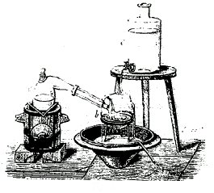
|
Adapté
du Cours de chimie de Gay-Lussac
Ce texte est
intéressant
en ce qu'il nous donne une technique d'obtention du fer-c'est-à-dire
du métal- à partir de l'alumine. Les sels de fer contenus
dans l'alun sont décomposés par du carbonate
de potasse. Celui-ci s'obtient soit par
lessivage
de cendres, soit par traitement à partir de la crême
de tartre
; il faut ajouter du salpêtre
pour obtenir du carbonate de potasse pur. Par ailleurs, le
salpêtre
permet d'obtenir de l'acide nitrique.
Le salpêtre, enfin, peut être retrouvé partout
où
il y a une activité humaine : c'est exactement ce
qu'écrivent
les anciens traités. Simplement, les Adeptes induisent une
confusion
en faisant croire qu'ils indiquent la provenance du sujet des Sages
alors
que nous venons de voir que le salpêtre ne joue un rôle
qu'en
tant que "comburant" et composant accessoire permettant notamment la
séparation
des métaux et l'obtention d'acide
nitrique
auquel ne résistent pas des métaux comme le plomb ou
l'étain,
contrairement à l'alumine (Al2O3). La
préparation
de l'acide nitrique peut se faire, par la distillation, en grand, de
l'acide
sulfurique [huile de vitriol] et du salpêtre. Ce mode d
epréparation
requiert d'employer un peu plus d'acide sulfurique qu'il faut, afin
d'obteni
du sulfate acide de potasse pour résidu [que
l'on pourra ensuite chauffer afin d'obtenir du sulfate neutre de
potasse
ou tartre vitriolé].
Pendant cette action, la cornue se remplit d'une vapeur rouge qui est
de
l'acide hypoazotique [nitreux]
et qui pourrait avoir quelque rapport avec le dragon rouge des Anciens
[et non pas avec le sublimé vénitien qui n'est d'aucune
utilité
dans l'oeuvre]. Dans les arts, on prépare l'acie nitrique [ou
azotique]
en chauffant un mélange de sulfate de fer [vitriol
vert è
Mars, Arès]
et du salpêtre [Vénus
è
Taureau].
Il se produit d'abord du sulfate de potasse et du nitrate de fer.
Celui-ci
se décompose ensuite par le contact de la chaleur et donne d
el'acide
nitrique. L'acide nitrique n'existe pas dans la nature à
l'état
de liberté. Celui qui peut prendre naissance dans les temps
d'orage
sous l'influence de la foudre [Zeus]
se trouve toujours combiné avec une base, telle que la chaux ou
l'ammoniaque.
17.
L'arsenic en alchimie a toujours exprimé le qualificatif
consacré
au principe Soufre et donc mâle (en grec arsenikon
de arsên,
mâle). Cela indique - pour le larron-
que c'est bien du principe Soufre qu'il s'agit. Le lecteur se rendra
compte
(cf. l'introduction) que cette étude est bien a "work in
progress"
car je signale exprès toute erreur commise afin que l'on se
fasse
une idée des pièges que sèment aux détours
d'une phrase les Adeptes... Je me suis trompé dans
l'interprétation
de ce larron. Il s'agit du Mercure. Le jeune
homme
aîlé peut renvoyer (cf. infra) à Zéphyre
mais aussi à Eros, qui était le plus jeune des dieux et
que
l'on considérait comme l'enfant de Vénus. En
réalité,
inconnu à l'époque homérique, Eros apparaît
comme le fils d'Erèbe et de la Nuit que
nous
avons déjà rencontrée. Primitivement, il a pour
rôle
de coordonner les éléments constitutifs de l'univers
(ici,
du microcosme philosophique) : c'est lui qui apporte l'harmonie dans le
chaos. Philalèthe semble donc jouer ici d'une part avec la
symbolique
primitive d'Eros et d'autre part avec la symbolique qu'on lui
connaît
et dont la physionomie ne s'est constituée que tardivement. En
effet,
il est aussi connu comme un enfant aîlé dont les caprices
et les espiègleries causèrent maints tourments. Sa malice
ne respectait même pas sa mère. Celle-ci devait parfois le
punir en le dépouillant de ses ailes
et de son carquois [c'est-à-dire
en le calmant, en l'adoucissant].
Le
mythe d'Eros est inséparable de celui de Psyché dont
Aphrodite
(Vénus) était jalouse. Un oracle, notamment, avait
enjoint
au père de Psyché de la conduire au sommet d'une montagne
; parvenue à ce sommet, elle se sentie soulevée par les
bras
de Zéphyre qui la transporta dans un magnifique palais (on
remarquera
l'analogie avec le texte de Cyliani, Hermès
dévoilé,
lorsque la nymphe enlève le héros endormi). Le mythe de
Psyché
semble renvoyer à la période d'instabilité
des
composants du Rebis dans le "vase de nature".
18.
Philalèthe envisage ici la difficulté dont parlent les
textes
pour unir les deux principes Mercure et Soufre. Le jeune homme
ailé,
contre toute attente, n'est pas le Mercure mais une allégorie
déguisant
l'arrivée du printemps -entendez les prémices de la
fertilisation
de la semence métaliique ou de la "résine de l'or"- par
l'entremise
de Zéphyre,
connu par les romains sous le nom de Favonius.
19. Diane symbolise le feu
secret ou dissolvant (voir notamment 1,2,3,4,5,6,7). Nous la voyons
apparaître dans un des articles d'E. Canseliet, L'Arbre
alchimique, où il nous la dépeint -en
détaillant cette planche de J.D. Mylius, Philosophia
reformata, coiffée d'un ménisque
d'argent (lunaire) et armée de son arc : elle monte un dauphin
en amazone et est précédée d'un aigle.
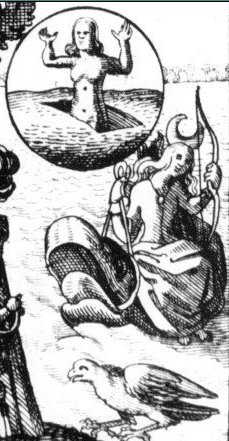
détail
d'une planche de la Philosophia Reformata
20.
La colombe est un symbole associé à la paix et dans le
christianisme,
c'est l'image de l'Esprit-Saint ; c'est en outre l'oiseau de
Vénus.
Fulcanelli parle de ces colombes dans Myst.,
p.136
:
"...et
ces Colombes de Diane, autre énigme désespérante,
sous laquelle la spiritualisation
et la sublimation
du mercure philosophal sont cachées."
et p. 206 :
"L'industrie du potier vous
serait plus instructive ; voyez
les planches de Piccolpassi, vous en
trouverez une qui représente une colombe dont les pattes
sont attachées à une pierre".
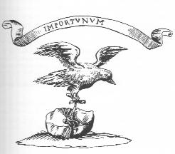
Puis, dans
les DM,
II, p.150, nous trouvons cette autre allusion quand l'Adepte
détaille
le caisson 9 de la cinquième série :
"On peut donc envisager les Colombes de Diane comme
deux parties de mercure dissolvant -les deux
pointes du croissant lunaire- contre une
de Vénus, laquelle doit tenir étroitement
embrassées ses colombes favorites. La correspondance se trouve
confirmée... par
la matière même d'où provient le mercure, terre
rocailleuse, chaotique, stérile sur laquelle les colombes se
reposent".
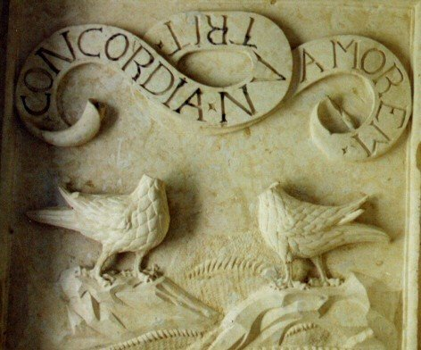
La
spiritualisation,
en alchimie, fait toujours référence à la fusion
d'un
composé. Nous sommes d'accord avec les deux composés du
dissolvant
que l'on a déjà évoqués. L'adjectif «
favorites
» mérite par contre un examen attentif. La faveur en latin
se dit favor (pour
sympathie,
c'est-à-dire attraction au sens figuré)
et la racine de favor est faveo. Or, le vent d'Ouest, i.e. le
zéphyr
est aussi tiré de faveo et se traduit par Favonius,
au sens figuré « léger et tiède »
comme le zéphyr ; le zéphyr annonce le printemps et la
fonte
des neiges. Là, au contraire, c'est le début d'une
coagulation
ou accrétion qui est commentée ; il apporte la pluie. Jeune
homme ailé, il glisse doucement
dans
l'espace et annonce l'humide printemps. La légende raconte qu'il
s'unit à Chloris, déesse de la Végétation,
qui donne le jour à un fils, Carpos,
le Fruit (carpo =
cueillir,
mais aussi tourmenter, assaillir par des attaques
répétées).
C'est une autre illustration du combat
des
deux natures. L'allusion au fait que Vénus
embrasse et enveloppe inséparablement ses colombes tient
peut-être
au caractère astringent du sel désigné par ce
symbole.
Quant au sol rocailleux, c'est une allusion à un minéral
de la nature du calcaire. Fulcanelli a la
bonté
quand il achève son examen du caisson de nous
révéler
que :
"Disons
cependant que les plantes appelées ornithogales
sont des... fleurs d'un beau blanc, et l'on sait que le lis
est, par excellence, la fleur emblématique de Marie".
On peut citer
à nouveau
pour
nous éclairer le Théâtre
de l'Astronomie
Terrestre
d'Edward Kelly où le chapitre IV traite de la préparation
de la Terre Mercurielle et le chapitre V de la
conversion du
Mercure
préparé en terre Mercurielle :
"car
à partir de métaux parfaits tu peux obtenir, par juste
séparation
des éléments, le Sel de
Nature,
ou Minerai des Philosophes, que certains nomment
Lis Philosophique,
sans lequel l'oeuvre
des
Sages ne saurait être accomplie. Car l'Art présuppose une
substance créée par la Nature seule, dans
laquelle l'Art assiste la Nature et la
Nature
assiste l'Art".
Il est ici
clairement évoqué un certain sel grâce auquel
l'Adepte pourra faire progresser de manière très rapide
un processus naturel qui met des millions d'années à se
réaliser naturellement. Du lis (ou lys), nous retiendrons le
symbole de pureté qui va de pair avec sa blancheur. Le sel
auquel nous pensons est blanc et il doit être absolument pur (1). Ce symbole a
été évoqué aussi par l'auteur d'Azoth
(Paris, 1624, d'après
l'Occulta Philosopha, etc. in Bibliotheca Chemica Curiosa, t. II, pp.
198-216) ; Dans son Alchimie,
J. Van Lennep évoque :
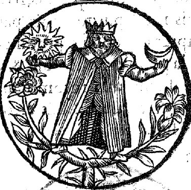
"Le
"héraut rouge" désigné comme le fils très
puissant
du soleil et de la lune apparaît
soutenant
ces astres, debout sur une plante s'épanouissant d'un
côté
en rose (rouge)
et de l'autre en lys (blanc)".
La même
image,
avec quelques variantes, est trouvée dans la Philosophia
reformata
de J.D. Mylius (planche 15, 7). Le lis, en grec, se dit krinon,
dont les autres acceptions sont : mendiant [qui
renvoie au Mercure, un mendiant n'est-il pas un vagabond qui erre ?]
et mort [putréfaction].
On peut, par cabale, rapprocher le lis de krinw
[séparer :
séparation initiale qui est réalisée dans la
préparation
de l'Arcanum duplicatum ; mais
on
trouve aussi : trancher, décider, juger :Turba
philosophorum]
Ce sont
là des images très classiques des principes Soufre et
Mercure. Le roi figure le Mercure philosophique. Ces colombes de Diane
trouvent leur équivalent dans la lyre d'Orphée. Elles
sont évoquées par E. Canseliet dans les Deux logis
alchimiques, lors de l'examen de la porte alchimique de la villa
Palombara, à Rome dont nous ne retiendrons pour l'instant
que la partie touchant Saturne :
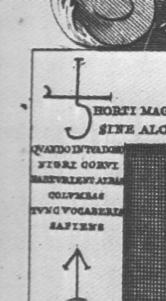
QUANDO
IN TVA DOMO - NIGRI CORVI - PARTVRIENT ALBAS - COLVMBAS - TVNC
VOCABERIS
SAPIENS
ce qui peut
se traduire
par :
"Quand,
dans ta maison, les noirs corbeaux auront enfanté les blanches
colombes,
alors tu seras nommé le sage"
E. Canseliet
en dit
:
"... [Saturne
évoque] spagyriquement, la mystérieuse matière,
très
souvent appelée par les auteurs, le plomb
des sages... ces blanches
colombes naissent du mercure ... et forment
la couche douillette
et nécessaire à l'union parfaite des deux jeunes et
royaux
époux du Grand Oeuvre".
Le plomb des
sages est le Mercurius  . Dans la Dame
du
Philosophe, E. Canseliet revient sur ce symbole :
. Dans la Dame
du
Philosophe, E. Canseliet revient sur ce symbole :
"La
palombe... c'est aussi la colombe,
c'est-à-dire l'emblème de l'esprit."
Enfin, dans
les Deux
Logis alchimiques, l'allusion se fait plus
précise :
"Sur
ces hautes-lisses, la sentence de Rolin se complète de la colombe
qui est perchée sur une branche de
chêne"
quand il
traite,
p. 160, de l'Hôtel-Dieu construit à Beaune par Nicolas
Rolin,
chancelier de Bourgogne.
Cette
colombe, perchée sur ce chêne, est l'exact
équivalent du Mercure fixé
sur le chêne que nous dépeint
Nicolas Flamel dans ses Figures
Hiéroglyphiques ; c'est aussi Cadmos
perçant le
python, c'est enfin une très curieuse allégorie figurant
dans l'ouvrage de Bernard Husson dans les Transmutations alchimiques [J'ai Lu, 1974],
où, p.203, on voit figurer un médailler saxon
rédigé parTentzel :

"La
première médaille de la 70e planche...est une
énigme...Elle représente à l'avers le Duc
vêtu
à la romaine, clouant sur un chêne,
au milieu d'une forêt, un bouclier
portant ses initiales. Au revers on lit, en lettres
calligraphiées,
En mémoire
perpétuelle."
De ce duc,
nous parlerons
d'abord : Frédéric Ier de Saxe-Gotha
(1646-1691)
est une des figures les plus attachantes parmi les Princes Philosophes
du Grand siècle. Ce monarque a voulu faire connaître
à
la postérité, mais en accord avec le dû secret, sa
qualification de philosophe hermétique grâce à
plusieurs
médailles où il révèle de grandes
connaissances
dans le maniement de la symbolique alchimique. J. Van Lennep a, de
cette
médaille, une interprétation qui me semble un peu
sommaire
:
"...on
pourrait également y voir le guerrier hermétique fixant
les
armes de son art sur l'arbre de la philosophie."
Si nous
prenons un
par un les éléments de cette médaille, nous
distinguons
: -le personnage lui-même, habillé à la romaine
- son marteau - le bouclier
cloué sur le chêne - un chien
au pied de l'arbre sur la droite, un chapeau, une trompette
et à gauche un troupeau de moutons.
On note enfin qu'un des rameaux de l'arbre est mort et qu'il
apparaît
noirci. Tous ces éléments nous donnent des indications
claires
sur la nature de l'allégorie : il s'agit de la composition
du
dissolvant universel.
1)- le
chêne : évoqué à maintes reprises, nous
savons qu'il se rapporte à Jupiter (chêne
rouvre et chêne yeuse) (1, 2, 3, 4, 5, 6, 7). Nous
avons également plusieurs indications qui permettent d’expliquer
la liaison entre le chêne et le
bélier,
dont Fulcanelli nous dit dans Les Mystères qu’il s’agit
de
la même substance mais de qualité différente selon
le stade de l’œuvre. Nous pensons que la solution de cette
énigme
peut être trouvée dans l’oracle
de Dodone qui
fut
ensuite supplanté par l’oracle de Delphes. A Dodone, l’oracle
était
annoncé par les bruissements des
chênes
dont les frondaisons étaient équipés de dispositifs
en airain. Nous avons vu que aes
signifie airain
et que le chêne rouvre
était consacré à Jupiter
(symbole de l’électrum –alliage d’or et d’argent- puis de l’étain)
; une étude plus approfondie des textes
tend cependant à nous rendre plus circonspect et à voir
dans
le chêne rouvre le symbole de Jupiter ammon, c'est-à-dire
du sable. La variété
kermès
du chêne renvoie alors à la stibine qui, dans certaines
conditions,
peut donner du gaz sulfhydrique qui permet d'obtenir du sulfure de
potassium
;
cette interprétation nous semble à présent fautive
: il est en effet improbable que les anciens alchimistes aient pu avoir
connaissance de l'hydrogène sulfuré et bien difficile
d'admettre
qu'ils aient eu l'idée de pratiquer l'attaque de la stibine par
de l'huile de vitriol. Le chêne est l'allégorie sous
laquelle
est présenté l'ensemble du compost
: le dissolvant, le lien du Mercure et les colombes. Le dissolvant est
sans doute du borax, du carbonate de soude ou du tartre
vitriolé,
en tout cas un sel alcalin ; l'une des colombes de Diane est
représentée
par l'alumine, tirée de l'alun. Cette alumine n'était pas
connue des Anciens qui, pourtant, en manipulant du kaolin, devaient
l'avoir
souvent sous les yeux. L'alumine ne pouvait donc être
identifiée
qu'à l'argile. Mais il fallait que cette argile fût alors
bien particulière : Les Grecs
retiraient
de Mélos
une terre qu'ils calcinaient et lavaient ; ils obtenaient alors une
poudre
blanche, légère, connue sous le nom de terre de Samos,
terre de Chio, terre Cimolienne : c'était l'alumine...A
l'époque
donc, l'alumine était appelée par les Romains lutum [boue,
fange et par extension, chose de vil prix ou méprisable].
Ce que les Anciens ignoraient aussi, c'était le comportement
spécial
de l'alumine quand on la porte à un feu violent. Marc-Antoine
Gaudin, dont nous avons évoqué les belles recherches
dans la section sur le Soufre [cf.
notamment la cristallogénie],
a fait remarquer que les pierres obtenues par ses
procédés
-et présentées à l'Académie des sciences-
sont
intermédiaires, pour la dureté, entre le strass et les
authentiques
gemmes orientales. C'est ce que note J. Rambosson, dans son ouvrage sur
les pierres précieuses [Firmin-Didot,
1884]. A cette époque, en
effet,
il n'avait pas été possible à M.A. Gaudin de
produire
des pierres orientales transparentes, c'est-à-dire exclusivement
à
base d'alumine, à cause de la tendance excessive de cette
substance
à se dévitrifier.
Ce qui empêche également de manier l'alumine comme on le
désirerait,
c'est qu'elle ne fond qu'à une très haute
température
; elle devient tout à coup fluide comme de l'eau, sans passer
par
l'état pâteux ; elle se met en ébullition en
lançant
des étincelles, puis se vaporise et disparaît rapidement,
comme du camphre. On peut bien lui donner de la ductilité en y
ajoutant
une très forte proportion de silice
qui
l'empêche de cristalliser mais alors la dureté du
composé
se trouve considérablement diminuée : bien qu'approchant
de celle du cristal de roche, elle ne peut jamais l'atteindre sans
passer
à l'état pierreux par le refroidissement. On touche ici,
n'en doutons pas, au plus haut secret de l'oeuvre : à ce stade,
le lecteur aura intérêt à revoir les travaux de
Jacques-Joseph
Ebelmen concernant l'usage de la silice
dans la préparation du corindon. Cette action fixante de la
silice
est illustrée par la figure qui représente une
remarquable
allégorie de cette volatilisation qu'il faut « contrarier
». Une autre difficulté réside dans la
quantité
suffisante et non excessive de silice qu'il faut infuser à
l'alumine,
en sorte que ne se produise pas ou peu le phénomène de
tendance
à l'amollissement signalé par M. Gaudin. L'autre colombe
est sans doute une chaux métallique telle qu'en parle E.
Canseliet
dans ses Deux Logis alchimiques (p. 53) :
"Les
ondes sont ces eaux que Moïse...qualifia de supérieures et
qui génèrent le météore infiniment
précieux
au-dessus de tous les autres, dénommé la rosée,
elle-même
véhiculant l'esprit ou le sel harmoniac du ciel. Celui-ci
est isomère
du nitre ou isotope si l'on veut..."
Cette
rosée
[drosia],
cette gelée blanche [drosoV]
vient nécessairement de la mer, eau salée [alV],
et se présente à nous comme une écume, une cendre
ou une efflorescence [knooV].
Son devenir est d'être transformé par l'art en une forme
liquide
[kaoV],
aidé en cela par les traits d'Artémis
à la courte tunique [kitwnh],
symbole du dissolvant secret : c'est Artémis en effet qui dirige
alors le char, tient les brides du cheval [ruthr]
et qui exerce un support, un soutien [ereisma]
permanent au travail ; cette permanence de l'action sous tend
l'allégorie
du cercle [guroV :
assonance phonétique avec gujoV
= gypse, chaux vive]
à l'Ourobouros car c'est un travail actif qui se produit et
où,
effectivement, le Mercure, peu à peu, se dévore
lui-même
par sublimation.
2)- Le
troupeau
de moutons est là pour : bélier,
qui
renvoie à Jupiter Ammon
(= qui a la forme d’un
bélier)
et aux volutes des cornes de Jupiter Ammon. Enfin, quercus, le
chêne,
a comme traduction possible le vaisseau
Argo,
c’est-à-dire le vase de nature
qui constitue le Mercure philosophique dans lequel est cuit le compost
(rebis philosophique) ;
3)-
Le bouclier
symbolise la Toison d'or ; cet écu
que
le Duc fixe au tronc du chêne renvoie à scutum
qui est un bouclier ovale et convexe puis long et creux, comme une tuile
faîtière. Par extension, la
tuile
indique testa
= coquille, tuile,
vase en terre cuite, écaille, carapace de tortue. Le bouclier
par sa racine grecque aspiV
a la valeur d'abri.
En latin, abri se dit apricus (= exposé au soleil) auquel se
rattache aperte
(= clairement, à l'air libre). On
peut ajouter que le bouclier tire aussi son origine de l'Air,
c'est-à-dire
de Zeus : en effet, Zeus possédait un bouclier qui avait
été
confectionné par Héphaïstos. Il était
constitué
de la peau de la chèvre Amalthée [dont
nous avons eu déjà l'occasion de parler dans le
commentaire
qui accompagne les Figures
Hiéroglyphiques],
garnie de franges [kraV
= tête, i.e. Caput : krasiV
= alliage]
bordée de têtes de serpent et porte en son milieu une
tête
de Gorgone, sans doute Méduse [cf.
la section des Gardes du corps].
Ce bouclier a aussi la valeur d'une tempête, d'une nuée
orageuse.
Là encore, nous remarquons la nature mercurielle de ce bouclier
magique.
4)-
Le chien,
endormi, docile rappelle étonnamment celui qui figure au pied du
navire Argo qui figure sur le bas-relief de la fontaine du Vertbois.
Fulcanelli
nous en disait que :
"le
chien était consacré à Mercure comme au plus
vigilant
et au plus rusé
de tous les dieux...". (DM, II, p.50)
Le chien
renvoie
aussi à celui, provenant du Corascène (1),
évoqué par Artephius.
Par parenthèse, nous voila ramené au texte de
Philalèthe
quand il écrit : « à cause des
embûches
du larron dont les ruses sont presque
inévitables
» ; ce larron ou voleur
pourrait donc
être
tout simplement...Mercure. Fulcanelli dit plus loin :
" [ce
sont] les seuls agents dont l'assemblage,
le combat et la mort,
réalisés
par l'entremise du feu philosophique, donnent naissance au mercure
hermétique
vivant et animé" (DM, II, p.201).
5)-
Le chapeau
: il rappelle le pétase ou le bonnet phrygien. Dans ce symbole
gît
un grand secret. E. Canseliet l'évoque en ses Deux Logis
à la fin du chapitre La Fontaine indécente :
"L'indication
est précieuse...que l'harmoniaque eau de jouvence doive remplir
le chapeau, à savoir le caput qui est la terre noire et
élevée
au-dessus de l'eau blanche, lors de la première séparation".
Ce chapeau
évoque
le chapiteau de la cucurbite. Il faut notamment remarquer la coupelle
couverte
et
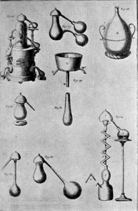
planche 7 du Dictionnaire de Pernety
large, dans
laquelle
se condensent les vapeurs. En effet, elle rappelle le chapeau
particulier
que Fulcanelli décrit lorsqu'il nous parle du bonnet phrygien
( Myst., p.93) ; Dans les DM,
I (p.374)
Fulcanelli
évoque à nouveau ce pétase (chapeau et attribut
d'Hermès)
:
"On
sait, d'autre part, que les souffleurs appelaient leur alambic homo
galeatus - l'homme coiffé d'un casque - parce qu'il était
composé
d'une cucurbite couverte de son chapiteau."
Comme
d'habitude,
c'est avec prudence qu'il faut prendre cette réflexion de
Fulcanelli,
car le casque (= cassis)
peut fort bien renvoyer à l'étain par assonance
phonétique
(= cassiteris).
Le pétase
est aussi, on le sait, inséparable du mythe de Cybèle.
Nous renvoyons donc le lecteur à notre exposé sur
Cybèle
qui, pour nous, est un compendium de l'athanor secret,
c'est-à-dire
du vase de nature.
6)- la trompette
: elle renvoie à aes (=airain, cuivre) et indirectement à
Chypre ; voir notamment (1, 2, 3, 4, 5).
7)- le bouclier
: nous avons déjà étudié ce symbole dans la
page consacrée à l'église où se trouve un rébus
(St Grégoire-de-Vièvre) qui s'avère être un
compendium du Grand Oeuvre.
8)-
l'hâbit
à la romaine : c'est le point faible de
l'interprétation.
Nous y verrions en effet une allusion au vitriol romain,
c'est-à-dire
à de l'alun de Rome (1, 2, 3, 4, 5)
sur lequel nous avons déjà écrit suffisamment pour
qu'on nous permette de faire ici une impasse.
9)- la
branche
morte nous rappelle l'arbre
mort du caisson de Dampierre.
10)- la mémoire
perpétuelle évoque le caractère
permanent de l'eau mercurielle.
Enfin, on
notera
que ces colombes ont fait l'objet d'une analyse d'Isaac Newton (cf.
Newton, Richard Westfall, Flammarion, 1994),
d'abord p.399 :
"Le
10 mai 1681, je compris que l'étoile du matin est Vénus
et
qu'elle est la fille de Saturne et l'une des colombes.
Le 14 mai, je compris Neptune. Le 15 mai, je compris...qu'il y a...une
autre colombe
: c'est-à-dire un sublimé qui est complètement
féculent
s'élève de ces corps blancs [sel ammoniac] (extrait
de Keynes, MS 3975, p.121)
et plus loin :
"Le
18 mai, j'ai perfectionné la solution idéale.
C'est-à-dire
que deux sels égaux portent Saturne. Ensuite il porte la pierre
et joint le malléable Jupiter, donne également * [sel
ammoniac] et ce dans de telles proportions que Jupiter s'empare du
sceptre.
ensuite l'aigle élève Jupiter..."
(idem, p.122)
Une autre
citation
nous éclaire sur l'apport d'étain au plomb :
"Il
[Newton] illustrait ainsi par les phénomènes chimiques le
phénomène de médiation au moyen duquel les
substances
insociables snt conduites à se mélanger. Le plomb fondu
ne
se mélange ni au cuivre ni au régule de Mars [le
métal
fer], mais par la médiation de l'étain, il se
mélange
avec les deux. Par la médiation des esprits salins, l'eau se
mélange
avec les métaux..."
Tout cela
s'accorde
avec le fait que le plomb et l'étain mélés sous
une
certaine forme permettent à deux substances d'être
dissoutes
(putréfaction) avant plus tard, de "réémerger"
sous
une forme cristalline, par un phénomène
d'accrétion
progressif (réincrudation).
Le secret réside évidemment dans la manière de
préparer
ces substances et le dosage du feu.
21.
Ces colombes volant sans aile évoquent ce que nous avons dit supra
concernant Eros dont sa mère, pour le rendre supportable devait
parfois le dépouiller de ses ailes.
22. La nymphe Vénus, en grec, est Aphrodite à laquelle elle fut
assimilée à partir du IIe siècle av. J.-C. En
fait, par calembour, Aphrodite a valeur d'écume (du grec ajroV). Donc, à chaque fois que Vénus
ou Aphrodite sont citées par les alchimistes, on doit penser
à une écume qui surnage. La naissance d'Aphrodite est
bien connue : Cronos, à l'instigation de sa mère,
Gaïa, mutile de sa harpê son père

naissance
de Vénus, S. Botticelli, c. 1485
Ouranos et
jette
dans la mer les débris de la virilité paternelle. Ceux-ci
surnagent et il s'en dégage une blanche écume d'où
naît Aphrodite. Portée par le souffle de Zéphyre,
elle
aborde le rivage de Chypre où elle est parée de riches
vêtements
et de bijoux merveilleux. C'est, au vrai, l'exacte description du
résultat
progressif de la grande coction : la coagulation.
La coquille
représente
le carbonate qui sert tout
à
la fois de réceptacle et de vase de nature.
23.
Il s'agit peut-être de vapeurs de plomb. On rappelle que le plomb
(Pb) fond à 335°C et qu'il répand des vapeurs au
rouge
clair. Sa volatilité est telle qu'il perd 9% de son poids
à
la température d'un feu de porcelaine (1300°C).
24.
C'est ici d'odeur sensible à l'entendement et non à
l'odorat
qu'il s'agit. Fulcanelli (Les Mystères, p.104) nous dit
que
la putréfaction se déclare quand la noirceur
apparaît
et que c'est le signe d'un travail régulier et conforme à
la nature. Il cite aussi un manuscrit anonyme du XVIIIe
siècle
(La Clef du Cabinet hermétique)
:
"Quelques
Philosophes l'ont aussi marqué. Morien dit : il faut qu'on y
remarque
quelque acidité et qu'elle ait quelque odeur
de sépulcre. Philalèthe dit
qu'il faut qu'elle paroisse comme des yeux de poisson...et qu'il
paroisse
qu'elle écume
; car c'est une marque que la matière se fermente et qu'elle bout.
Cette fermentation...se fait par notre feu secret, qui est le seul
agent
qui puisse ouvrir, sublimer et putréfier".
C'est dans
cette
partie de l'oeuvre que les alchimistes appellent leur matière le
laton
non net ou le plomb fondu. E. Canseliet
revient
sur cette noirceur (L'Alchimie expliquée sur ses textes
classiques,
p.205) :
"L'artiste,
à ses débuts, se tromperait grossièrement, si
l'idée
lui venait qu'il fallût rejeter comme inutile et sans valeur, ce
chaos surprenant et curieusement homogène, lequel est aussi
dénommé
la tête morte -caput
mortuum."
Fulcanelli
nous dit
exactement l'inverse dans ses DM, I, p.391 :
"Quant
au bucrâne, sculpté sur le même axe... il indique ce
caput mortuum immonde, grossier, terre damnée du corps, impure,
inerte et stérile, que l'action du dissolvant sépare,
rejette,
précipite comme un résidu
inutile et sans valeur".
Le chapitre Alchimie
et Spagyrie, aux DM, II, p.190 nous en dira
peut-être
un peu plus sur ces Esprits et sublimations dont parlent les textes
classiques.
Fulcanelli nous indique une technique d'extraction du soufre
métallique
à partir d'une dissolution d'argent dans de l'acide nitrique et
un passage, en particulier, vaut d'être cité :
"Il
faut d'abord... éviter
surtout
la fusion des sels.
Or, si la température reste inférieure au degré
requis
pour déterminer et maintenir la fluidité du
mélange,
il ne se produit pas de sublimation. D'autre part...le chlorure
d'argent... acquiert,
au contact du sel ammoniac, un tel mordant qu'il passe à travers
les parois du verre... Il y a donc, en cette méthode... certains
secrets
de pratique que les archimistes se sont prudemment
réservés.
L'un des meilleurs consiste à diviser
le mélange des chlorures en interposant un corps inerte...il
est indispensable aussi qu'on puisse facilement l'isoler du caput
mortuum.
On employait autrefois... la potée
d'étain... Cette
technique s'applique également au plomb... Le seul
côté
facheux... vient de ce que le sel ammoniac forme, avec le soufre
du plomb, une couche saline
compacte... quant
à l'extrait lui-même, il est d'un beau rouge... mais
très
impur comparativement à celui de l'argent."
E. Canseliet
dans
son Alchimie expliquée...(p.237)
nous reparle de ce
caput
mortuum :
"L'épais
magma, qui a été recueilli de l'industrieuse calcination
du caput, a été calciné dans le têt
à
rôtir et s'y est transformé en une poudre
érugineuse,
grasse et peut-être isotope du colcotar
; en tout cas, fort semblable au sesquioxyde
qu'on appelle aujourd'hui oxyde ferrique."
et encore,
p.258
:
"L'oeuf
des Philosophes s'est constitué des deux résultats qui
ont
été réservés à l'issue des premier
et
second oeuvres. D'un côté, le beau sel obtenu du caput,
grâce à l'agent de liquation, désigné en
toute
logique..."
et enfin,
p.261 :
"Il
est vrai que ce n'est pas le lion vert, ou vitriol philosophique, qui
constitue
directement la partie la plus importante du vaisseau de nature, mais
bien
les deux sels qui en découlent, et dont l'un vient du caput
mortuum,
et l'autre, un peu plus tard, de la vitreuse provision, après
qu'elle
a livré... le bouton
de retour."
C'est encore
une
fois avec une maîtrise consommée qu'E. Canseliet brouille
les cartes. Il est clair qu'est d'abord décrit -de façon
envieuse- l'un des composés du feu secret ou vase de nature :
c'est
un oxyde. Le beau sel qu'il évoque après semble se
rapporter
au Sel des Sages qui, selon notre hypothèse, est de l'alumine
anhydre.
Enfin, le bouton de retour évoque la coupelle qui permet la
détermination
du titre d'un alliage : l'aloi d'un alliage cuivre-argent-or peut
être
estimé en coupellant avec 2 ou 4 grammes de plomb exempt
d'argent
ou plomb d'oeuvre, permettant d'obtenir un bouton dit de retour
après
l'éclair, bref éclat jeté par le bouton
chauffé
dans un courant d'air à l'intérieur d'un moufle, sorte de
manchon réfractaire au moment où il est
libéré
de la couche d'impuretés fondues dans la litharge (oxyde de
plomb)
liquéfiée. Il semble que là, Canseliet
évoque
le principe Soufre.
25.
La Lune, chacun le sait, représente la
partie
mercurielle du Rebis. En alchimie, on distingue la Lune suivant sa
couleur,
bleu sombre ou blanche et fixée. E. Canseliet dans son Alchimie
expliquée... nous cite un passage des Récréations
hermétiques dues à un artiste anonyme :
"La
lune est par conséquent le réceptacle ou foyer commun
dont
tous les philosophes ont entendu parler ; elle est la source de leur eau
vive. Si
donc vous voulez réduire
en
eau les rayons du soleil, choisissez le moment où la lune... est
pleine...
vous aurez par ce moyen l'eau
ignée des rayons du soleil et de la
lune dans sa plus grande force."
La Lune est
inséparable
du principe humide - compris au sens alchimique du terme bien
sûr.
Cela signifie qu'à chaque fois qu'elle se trouve
évoquée
- elle, ou son équivalent, le principe Eau -, on prendra garde
qu'il
s'agit du dissolvant universel - en tout ou partie - dont on nous
parle.
Une fois n'est pas coutume, nous commenterons un article remarquable
paru
sur le site Contrepoints,
dû
à Fabrice Bardeau. Tout d'abord, c'est le Mutus Liber
qui
est évoqué :
"L'auteur
inconnu du Mutus Liber (Altus ? 1760 ou
peut-êtr
plutôt Saulat des Maretz), dans sa première planche,
attire
notre attention sur un influx d'origine cosmique qui se manifeste sur
terre
la nuit, par un ciel serein et la Lune bien apparente, en la saison ou
fleurissent les roses..."
Ici, nous
avons attiré
l'attention sur le fait que se trouvait évoqué Jupiter (1),
la saison évoquée, le mois de mai où le soleil
traverse
-si l'on se réfère au zodiaque tropical qui est celui
qu'emploient
les astrologues- le signe du Taureau : c'est donc la Terre par
excellence
(2).
"Autre
considération, donnée dans le « Rituel des Elus,
Cohen
de Martinez de Pasqualy -1768, sur l'influence de la Lune : «
Le travail ne peut se faire que depuis le renouveau de la Lune,
jusqu'à
la fin du premier
quartier,
et jamais depuis le commencement de la pleine jusqu'au renouveau de la
Lune suivante »..."
Si l'on
assimile
Diane (3) au dissolvant,
il est clair que les cornes lunaires (4)
font chacune renvoi à l'un des composés du feu secret
-alias
le dissolvant- ; il apparaît donc logique que le travail se fasse
à partir de la nouvelle Lune, puisque la grande coction qui est
le travail du 3ème Oeuvre, va aboutir à un
empâtement,
puis une coagulation progressive aboutissant par accrétion
à
un accroissement et une multiplication. Dès lors,
symboliquement,
on voit davantage la lune aller vers son plein plutôt que le
contraire.
On doit donc non seulement considérer la couleur mais aussi la
phase
de la Lune ; il est possible que les phases lunaires indiquent des
degrés
de température, la pleine lune pouvant correspondre à une
température maximale ; cela n'est qu'une hypothèse.
26.
Parabole tirée de la Genèse, quelle est sa signification
concrète ? L'Esprit se mouvant sur les eaux fait penser à
celui qu'évoque Fulcanelli (Myst., p.120) :
"Mais
les textes donnent le même nom [le
Lion] à la matière
réceptive
de l'Esprit universel, du feu secret dans l'élaboration du
dissolvant."
et il ajoute,
p.138
:
"Sans
entrer par le menu dans la technique opératoire, -ce qu'aucun
Auteur
n'a osé faire, - nous dirons cependant que l'Esprit universel,
corporifié
dans les minéraux sous le nom alchimique de Soufre, constitue le
principe et l'agent
efficace
de toutes les teintures métalliques".
Nous avons
déjà
parlé de cet Esprit (1, 2, 3, 4, 5, 6, 7, 8, 9, 10, 11, 12).
Il entre dans la symbolique qui a trait au dissolvant et il en
constitue
l'une des parts mercurielles ; aussi n'est-ce que d'un demi-mensonge
dont
se rend coupable Fulcanelli quand il assimile dans la dernière
citation
le Soufre à l'Esprit universel (notons qu'il parle ici du second
Soufre (1), i.e. le Soufre
corporifié)
27.
Il faut d'abord s'entendre sur cette séparation (sépare
sept fois cette lumière des ténèbres).
Elle figure dans notre texte d'abord quand nous évoquons la 2ème
figure de Lambsprink (1)
dont la légende indique « putréfaction
»
; nous n'étions pas sûr alors de la situation de cette
putréfaction
dans l'oeuvre, attendu que Le Breton nous assure (est-ce bien exact
?...)
qu'il y a 4 putréfactions. Celle de la 2ème
figure
semble se situer au IIe Oeuvre. E. Canseliet revient sur la
séparation dans la préface aux DM, I, p.55
où
il nous assure qu'elle est diamétralement opposée
à
la dissociation des éléments et plus encore à leur
désintégration. Nous douteux de sa franchise quand il
nous
dit que l'opération soit celle par laquelle commence
l'oeuvre...Fulcanelli,
lui, nous parle de la séparation en virtuose de
l'allégorie
; qu'on en juge :
"Quant
à l'arme d'attaque, c'est la lance...ou l'estoc
- séparation -
qu'il devra employer."
On ne
retiendra rien
ou presque de l'Alchimie
expliquée... d'E. Canseliet sur
ce
point de science où il prétend nous expliquer la
séparation
à coup de marteau...Du moins, n'est-ce certainement pas
là
une séparation philosophique. Dans ses Deux Logis
alchimiques,
il revient sur le thème au chapitre de la Conversion
des
Eléments
mais, là encore, pour nous certifier qu'elle absorbe toute la
première
partie du Grand Oeuvre. Si notre hypothèse de base est correcte,
il est vrai qu'au départ, il nous faut récupérer
le
Sel des Sages ou Toison d'or d'un
corps
qui est lui-même un sulfate double participant d'un
composé
d'aluminium et de potassium. Nous devons donc nécessairement
effectuer
une séparation de ce composé d'avec le « Soufre
puant » auquel il est lié. Mais est-ce la
véritable
séparation ? Nous en doutons. Néanmoins, Canseliet nous
rappelle
par deux fois, dans ce chapitre, que l'élément doit
être
retourné afin que s'en dégage le symbole tant
recherché
: que nous avons
maintes
fois abordé et qui ramènerait à un minerai
d'antimoine... Passons.
Cette séparation fait aussi - ne l'oublions pas - partie du
texte
fondateur de l'alchimie, la Table Smaragdine, comme
la nomme avec sa
façon
ampoulée coutumière E. Canseliet :
"Tu
sépareras la terre du feu, le subtil de l'épais,
doucement,
avec grande industrie."
Dans son
article
la Toison d'or (Alchimie,
p.211) :
"L'image
de cette séparation nous est offerte par le bélier Chrysomelle
dont la merveilleuse dépouille devait éveiller plus tard
la convoitise des Argonautes... «La Toison
d'or est la matière employée
à l'Oeuvre philosophale et le nom symbolique de la pierre
philosophale»
S'il est digne de remarquer que le bélier Chrysomelle ait
été
le fruit des amours de Neptune
(Poséidon) et d'une vierge... Ainsi,
du moins, la nature aqueuse et mercurielle de ce bélier, issu du
dieu des mers, nous est-elle suffisamment précisée, comme
l'est sa vitalisation par l'esprit
universel..."
Le
bélier Chrysomelle, c'est
littéralement
le bélier à la Toison d'or et aussi la pomme d'or (mhlon, probablement
le coing). Notons au passage que
certains
mots latins renfermant la syllabe chryso font référence
à
une sorte de topaze (chrysolithus).
Neptune fait référence à l'eau de façon
générale
et, nous l'avons supra, Newton l'utilise explicitement comme symbole.
La
vierge fait référence - du moins de façon purement
formelle - à Vénus-Aphrodite et nous voyons
apparaître
rapidement le symbole de la Terre . L'Esprit universel, nous venons d'en
parler (cf. note 26). Cette phrase de
Philalèthe est-elle donc purement allégorique, veut-elle
égarer encore un peu plus le lecteur ou exprime t-elle un
procédé
de séparation chimique décryptable ? Nous savons que ce
chapitre
a trait au dissolvant universel et nous avons vu que ce dissolvant
était
formé de deux substances qui doivent être très
pures.
Prenons le cas du procédé d'épuration de
l'étain
au XIXe siècle dit le procédé saxon :
Epuration
de l'étain
Dans
les terrains
les plus anciens, au milieu des roches granitiques, on trouve de
l'étain
oxydé. Les principaux gisements de ce minerai sont en Saxe, en
Bohême
et dans le comté de cornouailles. Il y en a aussi dans le
Morbihan
qui sont largement exploités. Pour détacher une grande
partie
des gangues [substances stériles mélangées aux
minéraux
utiles dans un filon], il faut d'abord bocarder les roches et les
laver.
On procède alors au grillage des résidus de lavage qui
sont
composés d'étain oxydé et de minéraux
très
denses [sulfures, arsénio-sulfures, etc.] pour enlever les
minéraux
métalliques et en faciliter le bocardage. Un second lavage rend
l'oxyde d'étain assez riche pour fournir 50 % de métal.
Dans
le fourneau, le charbon et le minerai sont chargés par couches
alternées.
A mesure que la réduction avance, le métal liquide passe
dans un creuset avec les scories. Celles-ci, étant
pâteuses
et moins denses que le métal, occupent la partie
supérieure
du bassin et sont enlevées sans difficulté. On fait alors
passer le métal liquide dans un autre bassin de réception
où il est épuré par un procédé assez
singulier qui évoque une séparation ou une sublimation
"philosophique"
: on brasse le bain à plusieurs reprises avec un bâton de
bois vert qui, étant très chauffé, dégage
beaucoup
de gaz. Il se manifeste alors un bouillonnement qui entraîne
à
la surface les crasses disséminées dans la masse liquide
; en même temps, la portion d'oxyde qui s'y trouvait dissoute ou
suspendue, se réduit. Le métal est alors enlevé
avec
de grandes cuillères de fer.
|
Ce
procédé assez étonnant se rapproche beaucoup de
techniques secrètes dont parle Fulcanelli à propos de
certains stratagèmes ou procédés ressortant
plutôt de la physique que de la chimie. Un autre
procédé de préparation du métal se
rapproche aussi d'allégories iconographiques se rapportant
à la sueur ou à la mise sous étuve du Roi ; on
peut citer à titre d'exemple les gravures de Lambsprinck

légende
:
"Ici
le Père sue violemment, de lui s'écoule l'Huile et la
vraie
Teinture des Philosophes."
(De Lapide
Philosophorum)
et d'autres de M. Maier (Atalanta Fugiens). Voici
l'un de ces
procédés
:
Suite
Par un
autre procédé
d'extraction de l'étain -dit procédé anglais- le
métal
obtenu n'est pas aussi pur que celui préparé par le
procédé
saxon ; pour le purifier, on le soumet à une liquation [il
s'agit
d'un procédé où l'on met à profit la
température
différente de fusibilité d'un métal par rapport
à
d'autres d'où il résulte que l'on obtient le métal
qui sourd de la masse] : dans un fourneau à
réverbère,
on range près de l'autel les pains (saumons) d'étain
à
purifier et on les chauffe modérément. Le métal
pur
qu'ils renferment fond le premier et suinte
littéralement à travers la masse.
Le résidu est un alliage très ferrugineux. On affine
alors
l'étain provenant de la liquation en le fondant et en le brassant
avec un bois vert comme dans le
procédé
saxon.
|
On
voit
bien, par là, les liens possibles que l'on peut
caractériser
entre des détails iconographiques parfois singuliers et des
procédés
classiques utilisés en métallurgie. Pour le plomb,
là encore, on peut trouver des analogies :
Considérations
sur le plomb
On sait
que les alchimistes
lui ont donné le nom de Saturne
car ils appelaient voracité
ce qu'on désigne par tendance à s'allier : le
métal
s'allie au plomb et semble perdre toutes ses propriétés.
Le plomb s'altère rapidement au contact de l'eau
pluviale, contrairement à l'eau
ordinaire (qui renferme des
matières
salines, telles que sulfates, chlorures, etc.) Il suffit de projeter de
la limaille de plomb dans une pareille eau ou dans de l'eau
distillée pour voir
apparaître
des traînées blanches qui partent des parcelles
métalliques
qui ne sont pas tombées au fond. Ces traînées sont
du carbonate de plomb. Des conduits de Versaille datant de
Louis
XIV ont été trouvés intacts alors que des toitures
de plomb ont été rapidement endommagées ;
l'explication
est que ces toitures ont reçu de l'eau pluviale qui ne renferme
d'autre sels que des azotates.
Les eaux de puits ou de rivière contiennent une quantité
notable de matières organiques azotées qui donnent lieu,
par leur contact avec le plomb, à une production
spontanée
et continue de sels solubles par suite d'une réaction qui donne
naissance à de l'acide nitreux.
|
Nous
avons
cherché dans les livres traitant de l'histoire de la chimie et
dans
des ouvrages fondamentaux comme l'Histoire Naturelle de Pline
l'Ancien
ou De l'Architecture
de Vitruve des
textes
qui pouvaient se rapprocher en quelque manière avec certains
détails
d'iconographie des vieux textes alchimiques. Notre attention a
été
attirée par deux textes ; le premier est de Vitruve (De
Architectura)
et se place au chapitre 12 du livre VII. En voici le texte :
"chapitre
12 :
Céruse
et vert-de-gris 1. Pour la céruse et le vert-de-gris que nous
appelons
chez nous aeruca,
il n'est pas hors de propos de dire comment on les prépare. A
Rhodes,
on place des sarments
dans des jarres au fond desquelles on a versé du vinaigre,
et sur les sarments on place des saumons [type
de lingot métallique tel qu'il sort du moule des fonderies
(surtout
de plomb et d'étain)] de plomb ;
puis on bouche les jarres avec des couvercles pour empêcher les
vapeurs
de s'échapper. Après un temps déterminé, on
ouvre, et l'on trouve la céruse qui s'est formée à
partir des saumons de plomb. Selon la même méthode, mais
en
plaçant sur les sarments des lamelles de cuivre, on obtient le
vert-de-gris
que nous appelons aeruca."
Dans une
histoire de la chimie,on trouve un texte adapté de cette
traduction de Vitruve qui parle non pas de jarre mais de tonneau. Il paraît
que le produit, ainsi obtenu, servait de fard aux dames romaines.
L'auteur ajoute que le procédé se retrouvait à
Corinthe et à Sparte. Cela n'est pas sans rappeler la Clef XII de B. Valentin :

Suite
I
Préparé
par des procédés industriels, il contient toujours de
l'oxyde
deplomb hydraté, i.e. du carbonate
basique de plomb. Il porte alors le nom de
céruse,
de blanc de plomb ou de blanc d'argent. Sa formule est 2Pb.CO3Pb.(OH)2.
Il est obtenu par action conjuguée sur le plomb des vapeurs
d'acide
acétique, de l'oxygène et de l'acide carbonique. Dans un
cours de chimie, professé au XIXe siècle, nous avons
trouvé
un autre procédé de préparation de la
céruse
où là encore, on peut faire quelque rapprochement avec
des
textes alchimiques. Il s'agit du procédé hollandais
; il consiste à exposer des lames de plomb, sous l'influence
d'une
température de 35° à 40°, à l'action
simultanée
de l'air, de l'acide carbonique et des vapeurs de vinaigre. L'air oxyde
le plomb, la vapeur de vinaigre se combine avec cet oxyde et forme de
l'acétate
basique, l'excès de base de ce sous-sel se combine avec l'acide
carbonique et produit du carbonate de
plomb
maintenu à l'état de sel basique. Dans ce
procédé,
l'acide carbonique et la chaleur sont fournis par la fermentation
du fumier. En effet, on introduit des
lames
de plomb tournées en spirale
dans des pots faits de telle sorte que les lames restent suspendues sur
le vinaigre qui se trouve dans le fond. Fermés
grossièrement
par une plaque de plomb, les pots sont disposés dans une couche
de fumier de cheval et recouverts par de la paille.
On peut former une série d'étages superposés et
arranger
ainsi un grand nombre de vases sur un petit espace. La céruse
obtenue
est opaque et amorphe.
|
On
relève
plusieurs analogies avec les textes alchimiques. Ceux-ci font souvent
référence
au fumier
pour
qualifier l'ubiquité extrême du corps qui doit servir au
Grand
Oeuvre ; de même, cet aspect spiralé est-il
évoqué
dans une des gravures du Théâtre
de l'Astronomie
terrestre
d'E. Kelly ou dans l'un des Ripley's Scrowle. La
forme
spiralée
des cornes de Jupiter Ammon
est aussi évoquée. Nous allons à présent
parler
de l'une des trois méthodes d'extraction de la galène ou
sulfure de plomb : la galène peut
être
traitée soit par le charbon (il s'agit alors de minerais impurs
et peu riches) soit par le fer (réservé aux
galènes
très siliceuses) soit par réaction (fondée sur
l'action
réciproque d'oxyde, de sulfure et de sulfate de Pb).
C'est la
seconde
méthode qui nous intéresse car elle n'est pas sans nous
rappeler
certains textes où il est dit en substance que la matière
première doit être taillée par le fer :
Suite
II
Cette
méthode
est fondée sur l'affinité du fer pour le soufre et rend
inutile
de soumettre le minerai à un grillage préalable. Le
minerai
passe dans des fours à réverbère ou dans des fours
à manche, conjointement avec de la fonte de fer
grenaillée
et des scories provenant d'opérations antérieures. Les
scories
ont pour but de provoquer la formation de silicates et la fusion de la
gangue siliceuse. Le plomb que l'on obtient est toujours
accompagné
d'une certaine portion de matte [substance
métallique sulfureuse résultant de la première
fusion
d'un minerai traité et non suffisamment épuré]
plombeuse que l'on soumet à son tour à l'action du fer.
|
L'aspect
de la pierre philosophale a été décrite à
de
nombreuses reprises par les Adeptes ou par les témoins des
soi-disant
transmutations métalliques en or. Voyons ce qui arrive lorsqu'on
prépare du protoxyde de plomb (litharge) :
Suite
III
Quand
on calcine
du carbonate ou de l'azotate de plomb, on obtient une poudre
jaune
que l'on appelle massicot ; si l'on chauffe assez le massicot
pour le fondre, il cristallise en se refroidissant et porte alors le
nom
de litharge.
Cette litharge a des aspects variés : il y en a de blanc,
de jaune, de rouge et de rose. Ces
différences
tiennent à la manière dont la litharge a
été
préparée. Lorsqu'on fait bouillir une dissolution de
soude
caustique avec un excès de litharge, il se forme par
refroidissement
des cristaux très petits et
très
lourds dont la couleur est rouge ; si
après
avoir chauffé ces cristaux, on les refroidit subitement, ils
deviennent
jaunes ; ainsi connait-on une litharge
d'or
[chrysitis cité par
Pline,
33, 106]
et une litharge d'argent.
|
Cela
nous
laisse perplexe sur l'apparence de la pierre philosophale qui
présenterait
-aux dires des témoins- une structure rappelant
singulièrement
l'aspect de la litharge d'or...
28.
Philalèthe fait-il ici allusion au Ludus puerorum et à la
roue qu'il convient de tourner après les travaux d'Hercule
? (1,2,3,4)
29.
Le Regulus dont nous avons parlé. Il faut prendre garde ici
à
la "concordance des temps" ; à un
siècle, en langage
hermétique,
correspond un jour
ou plutôt une
génération.
La durée d'une
génération
(saeculum,
33 ans et 4 mois) est souvent cité comme le temps
"allégorique"
qu'il faut pour aboutir au grand oeuvre). Fulcanelli,
dans Myst., p.198 explique aussi à propos
de
la génération que :
"La
mort du corps laisse apparaître une coloration bleu foncé
ou noire...Tel est le signe et la première manifestation de la
dissolution,
de la séparation des éléments et de la génération
future du soufre, principe colorant et fixe des métaux...Le
corps
mortifié, tombe en cendre noire ayant l'aspect du poussier de
charbon..."
E. Kelly
évoque
aussi la génération dans son Théâtre...(chapitre
neuvième : la conjonction du soleil et de la Lune):
"... car
lorsque le mâle et la femelle sont conjoints au moyen du sperme,
une génération
peut survenir dans le menstrue."
Enfin, on
trouve
un passage dans la Table d'Emeraude :
"Tout
ce qui est dans le monde est en mouvement soit pour augmenter, soit
pour
diminuer. Puisque ce qui est en mouvement est aussi en vie, même
la terre, par
le mouvement de la génération et de l'altération,
est donc vivante."
qui parle aussi
de cette
génération.
30.
Cette fin des siècles qui correspond à l'Apocalypse est
évoquée
par Fulcanelli dans l' Embrasement (DM,
II, p.350) :
"...le
monde d'alors périt, étant submergé par le
déluge
des eaux. Or, les cieux et la terre d'à présent...sont
réservés
pour être brûlés par le feu, au jour du
jugement... Or,
comme un larron
vient durant la nuit, aussi le jour du Seigneur viendra tout d'un
coup... les
éléments embrasés se dissoudront, et la terre sera
brûlée avec tout ce qu'elle contient"
(Seconde Epître, III).